Центральный научно-исследовательский институт
строительных конструкций им. В.А. Кучеренко
(ЦНИИСК им. В.А. Кучеренко) Госстроя СССР
Справочное пособие к СНиП
Серия основана в 1989 году
Проектирование
асбестоцементных
конструкций
Москва Стройиздат 1990
Рекомендовано к изданию секцией легких конструкций научно-технического совета ЦНИИСК им. В.А. Кучеренко.
Разработано ЦНИИСК им. В.А. Кучеренко Госстроя СССР (кандидаты техн. наук Л.Н. Пицкель - разд. 1 - 7; Ю.Ц. Гохберг - разд. 1 - 4, 7; Н.Н. Поляков - разд. 4, 7; С.Б. Ермолов и Л.В. Суровова - разд. 7; инж. П.М. Киселев - разд. 7); ЦНИИЭПсельстроем Госагропрома СССР (канд. техн. наук Ю.А. Муравьев, инж. В.Н. Аверьянов - разд. 4 и прил. 2); НИИСФ Госстроя СССР (канд. техн. наук И.Г. Кожевников - разд. 6); ВНИИПроектасбестоцементом (канд. техн. наук И.Н. Иорамашвили, инженеры В.И. Пивко, Н.И. Зельвянская - прил. 1). Под общей редакцией кандидатов техн. наук Л.Н. Пицкеля и Ю.Ц. Гохберга.
Редактор И.А. Баринова
Разработано к СНиП 2.03.09-85 «Асбестоцементные конструкции». Содержит рекомендации по расчету и проектированию конструкций. Даны примеры расчета наиболее распространенных асбестоцементных конструкций. Приведены номенклатура конструкций и основные области их применения.
Для инженерно-технических работников проектных и строительных организаций.
1. ОБЩИЕ ПОЛОЖЕНИЯ
1.1. Настоящее справочное пособие дает рекомендации по расчету и проектированию асбестоцементных конструкций следующих типов:
плоских и волнистых (профилированных) листов, сводчатых оболочек волнистого профиля, изготовляемых из листового асбестоцемента на листоформовочных машинах;
плит и панелей комплексных каркасных и бескаркасных (трехслойных) с облицовками из плоских асбестоцементных листов;
многопустотных плит и панелей, а также погонажных изделий (швеллеров, подоконных досок, плинтусов и других деталей), изготовляемых по экструзионной технологии.
1.2. Текст СНиП 2.03.09-85 отмечен в Пособии соответствующим номером пункта в квадратных скобках; ссылки на пункты, таблицы, формулы и чертежи данного СНиПа приведены также в квадратных скобках.
В прил. 1 к СНиП 2.03.09-85 приведены рекомендации по основному и допустимому применению рассматриваемых конструкций в различных частях зданий и сооружений. При выборе типов конструкций следует учитывать физико-механические характеристики асбестоцемента и конструкций из этого материала, технико-экономические показатели конструкций.
1.3. Асбестоцементные конструкции и изделия должны применяться только при наличии проекта производства строительных работ, составленного на основе действующих нормативных документов и рекомендаций по хранению, транспортированию, монтажу и эксплуатации этих конструкций.
Правильно спроектированные, смонтированные и эксплуатируемые асбестоцементные конструкции, как показывают натурные обследования, имеют срок службы 30 - 50 лет.
1.4. [1.2]. Конструкции должны проектироваться с учетом их заводского изготовления.
Это требование связано с особенностью производства конструкций. Волнистые и плоские листы, экструзионные плиты и панели изготовляются на технологических линиях производительностью более 500 тыс. м2/год. Каркасные и бескаркасные плиты и панели также производят в специализированых цехах, производительностью 50 - 100 тыс. м2/год на предприятиях строительной индустрии.
В обоих случаях продукция выпускается в соответствии с ГОСТами или ТУ, с последующим техническим контролем.
Изготовление каркасных или бескаркасных комплексных конструкций непосредственно на строительной площадке может допускаться только в исключительных случаях, на требуемом техническом и организационном уровне, с проведением соответствующих контрольных испытаний.
1.5. [1.4]. Асбестоцементные конструкции следует рассчитывать по несущей способности (предельным состояниям первой группы) и по деформациям (предельным состояниям второй группы).
Исследованиями установлено, что асбестоцемент - листовой и экструзионный - с достаточный для практики точностью может приниматься при расчетах как материал, характеризующийся линейной зависимостью между напряжениями и деформациями. Оба предельных состояния имеют место практически для всех асбестоцементных конструкций; для многих определяющим является второе, как следствие больших линейных деформаций материала при увлажнении, что сформулировано в [п. 1.7].
1.6. [1.8]. При проектировании асбестоцементных конструкций, эксплуатируемых в условиях агрессивных сред, следует предусматривать защиту их и элементов крепления к несущему каркасу здания от коррозии в соответствии с требованиями СНиП 2.03.11-85.
Согласно СНиП 2.03.11-85 защита асбестоцементных конструкций требуется при средней или сильной агрессии. Согласно [п. 6.16] поверхности асбестоцементных конструкций (плит и панелей всех видов) рекомендуется защищать от увлажнения с целью уменьшения влажностных деформаций. Эту защиту следует применять во всех случаях, вне зависимости от величин влажностных деформаций.
1.7. [1.9]. Плиты и панели каркасные и экструзионные следует применять при температуре нагрева их поверхности не более 80 °С.
Это ограничение температуры нагрева связано с требованиями ограничения ползучести асбестоцемента, возрастающей при повышении температуры.
1.8. [1.10]. Плиты и панели бескаркасные следует применять при температуре внутренней поверхности конструкций не более 30 °С и при температуре наружной поверхности не более 80 °С.
Ограничение температуры нагрева внутренней поверхности конструкций связано с резким уменьшением расчетных характеристик пенопластов при действии повышенных температур.
1.9. [1.11]. Свободно лежащие плоские и волнистые листы следует применять при температуре не более 100 °С.
Увеличение допускаемой температуры для асбестоцемента с 80 °С (см. п. 1.7 Пособия) до 100 °С связано с тем, что для листов разрешается больший прогиб, чем для плит и панелей [см. табл. 7].
2. МАТЕРИАЛЫ
2.1. По [пп. 2.1 и 2.2] асбестоцементные плоские и волнистые (профилированные) листы, применяемые в ограждениях, являются самостоятельными конструкциями (см. прил. 1). Плоские листы, используемые в плитах и панелях, являются материалом для этих конструкций.
2.2. [2.4]. Для плит и панелей каркасных и экструзионных необходимо использовать минераловатный или стекловатный утеплитель на синтетическом связующем, а также при наличии технико-экономических обоснований другие теплоизоляционные материалы.
Минераловатные утеплители рекомендуется применять в виде матов, что улучшает долговечность конструкций и условий труда при их производстве.
2.3. Перечень пенопластов, применяемых в асбестоцементных конструкциях, и расчетные характеристики пенопластов приведены в [прил. 2].
3. РАСЧЕТНЫЕ ХАРАКТЕРИСТИКИ МАТЕРИАЛОВ
3.1. [3.1]. Расчетные сопротивления листового асбестоцемента следует принимать по [табл. 1], экструзионного асбестоцемента - по [табл. 3].
При определении расчетных сопротивлений листового асбестоцемента по [табл. 1] величину временного сопротивления (предела прочности асбестоцемента изгибу) следует принимать по государственным стандартам или техническим условиям, при этом величину временного сопротивления асбестоцемента плоских листов необходимо умножить на коэффициент 0,9.
Это требование вызвано особенностью стандартной методики испытаний, предусматривающей испытания образцов, вырезанных из плоских листов, в двух направлениях - вдоль и поперек листа. За предел прочности принимается полусумма результатов этих двух испытаний.
Определим расчетные сопротивления R листового плоского непрессованного асбестоцемента.
Таблица 1
|
Величина напряжений, МПа/(кгс/см2), от действия |
Величина напряжения b, МПа, от действия |
Величина 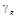 |
||||||
|
постоянной нагрузки |
временной длительной снеговой нагрузки |
кратковременной снеговой нагрузки |
ветровой нагрузки |
влажностных воздействий |
постоянных и длительных нагрузок |
неблагоприятного сочетания всех нагрузок и воздействий |
||
|
Нижняя полка |
0,8 (8) |
1,2 (12) |
1 (10) |
0,3 (3) |
-0,7 (-7) |
2 (20) |
3,3 (33) |
0,62 |
|
Ребро |
0,64 (6,4) |
0,96 (9,6) |
0,8 (8) |
0,24 (2,4) |
3,06 (30,6) |
1,6 (16) |
5,7 (57) |
0,78 |
По ГОСТ 18124-75 (СТ СЭВ 827-77) предел
прочности 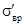
3.2. Расчетные сопротивления асбестоцемента следует умножать на следующие коэффициенты условий работы:
а) по [п. 3.2а] для асбестоцементных конструкций,
проверяемых на воздействие постоянных, временных длительных и кратковременных
нагрузок, - на коэффициент 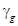
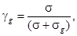
где - нормальные напряжения от действия постоянных, временных длительных и кратковременных нагрузок;
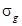
По данным расчета экструзионной плиты определим значения для различных элементов конструкций при неблагоприятных сочетаниях нагрузок и воздействий (см. табл. 1).
При линейной зависимости между нагрузками и напряжениями допускается определять, принимая вместо напряжении нагрузки, их вызывающие;
б) по [п. 3.2б] для конструкций, находящихся в условиях атмосферного увлажнения (подверженных действию капельной влаги) и в помещениях с мокрым и влажным режимом, принимаемым по СНиП II-3-79**, при защите наружных поверхностей конструкций влагонепроницаемыми покрытиями - на коэффициент = 0,9; при отсутствии защиты для конструкций из листового асбестоцемента - на = 0,8; для конструкций из экструзионного асбестоцемента - на = 0,65.
3.3. При назначении коэффициента = 0,9 для расчетных сопротивлений асбестоцемента элементов конструкций и при защите влагонепроницаемыми покрытиями следует учитывать вид покрытия и вид влажностных воздействий. Различают влажностные воздействия, вызванные действием капельной влаги и воздушным увлажнением [по табл. 6]; различают покрытия, непроницаемые как для жидкой, так и парообразной влаги, и покрытия, непроницаемые только для жидкой или только для парообразной влаги. Так, например, если покрытие (например, краска) защищает наружную обшивку (полку) плиты или панели лишь от жидкой влаги, то коэффициент = 0,9 следует использовать при определении расчетного сопротивления материала обшивки (полки) при ее расчете только на увлажнение капельной влагой [табл. 6]; при воздушном же увлажнении обшивки (полки) плиты или панели следует вводить коэффициент = 0,8 или = 0,65.
3.4. [3.7]. Определяемое для асбестоцемента, защищенного от увлажнения, значение e умножают на коэффициент 0,75.
При введении коэффициента = 0,75 к значению влажностных линейных деформаций асбестоцемента, защищенного от увлажнения, следует принимать во внимание соображения об учете вида защитного покрытия и вида увлажнения, изложенные в п. 3.3.
4. РАСЧЕТ ЭЛЕМЕНТОВ АСБЕСТОЦЕМЕНТНЫХ КОНСТРУКЦИЙ
4.1. По [п. 4.1] проверку прочности элементов асбестоцементных конструкций следует производить из условия обеспечения в элементах напряжений, не превышающих расчетные сопротивления (с соответствующими понижающими коэффициентами) при суммарном учете силовых и температурно-влажностных воздействий.
В соответствии с особенностями конструктивных решений в п. 4.1 СНиП 2.03.09-85 приводятся формулы для проверки прочности обшивок каркасных, бескаркасных плит и панелей, полок экструзионных плит и панелей, заполнителя бескаркасных панелей, клеевых соединений обшивок с каркасом, плоских и волнистых листов.
4.2. По [п. 4.2] расчет асбестоцементных каркасных конструкций проводится с учетом податливости соединений между обшивками и каркасом. Ниже приводится последовательность проведения расчета.
Значения напряжений в обшивках и каркасе определяются по формулам [11] - [14].
Определение напряжений в расчетном сечении при наличии податливости в соединениях обшивок с каркасом производится в два этапа, причем при назначении расчетного сечения каркасной плиты или панели учитывается только часть ширины обшивок, редуцируемых к ребрам [см. п. 4.3].
Первый этап расчета носит предварительный характер и
заключается в определении коэффициента податливости связей т в указанных
выше формулах. Находят положение нейтральной оси по формуле [24]. Определяется
момент инерции расчетного сечения 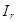
По формуле [21] и [22], в которой следует заменить b на
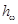 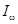 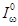
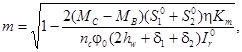
а формула [22]:
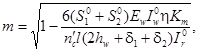
где - момент инерции каркаса относительно собственной оси.
Формула (1) используется для определения коэффициента m при расчете изгибаемых конструкций, за исключением случая чистого изгиба (постоянная эпюра изгибающих моментов на всем пролете).
При расчете свободно опертой каркасной плиты или панели на действие равномерно распределенной нагрузки следует пользоваться формулой (2).
Коэффициент т может иметь разное значение по длине конструкции, отрезок которой определяется начальным и конечным (для этого отрезка) изгибающими моментами. Рекомендуется принимать отрезок СВ, на котором эпюра поперечных сил однозначна.
Значение  определяется для каждого участка по
формуле [23]; причем если т > т0, то для расчета каркаса
следует принимать т = т0, если т < т0,
то следует принимать для такого расчета m. Для
расчета обшивок приведенные рекомендации принимаются с обратными знаками
неравенств.
определяется для каждого участка по
формуле [23]; причем если т > т0, то для расчета каркаса
следует принимать т = т0, если т < т0,
то следует принимать для такого расчета m. Для
расчета обшивок приведенные рекомендации принимаются с обратными знаками
неравенств.
Получив значения коэффициентов податливости по формулам (1) и (2), определяем нормальные и касательные напряжения в обшивках и каркасах по [п. 4.2].
Следующий этап расчета состоит в проверке соединений.
Для этого определяем выполнение неравенства по формуле [25] с учетом
определения расчетных усилий 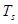
4.3. По [п. 4.11] при соединении плит и панелей на деревянных каркасах гвоздями или профильными элементами работа обшивок не учитывается.
4.4. Согласно [п. 6.9] гвоздевые соединения не могут применяться для плит покрытий. Эти ограничения, в частности, вызваны требованиями обеспечения повышенной безопасности монтажа кровельных волнистых листов, укладываемых по асбестоцементным плитам типа ПАД.
4.5. В стеновых панелях допускается применение гвоздевых соединений, устанавливаемых с соблюдением требований [разд. 6].
4.6. Расчет бескаркасных плит и панелей по [пп. 4.13 и 4.20] производится без учета работы элементов обрамления.
4.7. Приведенный в [п. 4.17] расчет распространяется на каркасные и экструзионные плиты и панели с двумя обшивками. Расчет плит и панелей с одной обшивкой при соединениях ее с каркасом на шурупах, гвоздях и профилях на температурные и влажностные воздействия не производится.
4.8. Расчет конструкций в виде волнистых профилированных и плоских листов (при их свободном опирании) на температурно-влажностные воздействия не производится.
4.9. Расчет каркасных плит и панелей на температурные и влажностные воздействия по [пп. 4.17 и 4.29] производится без учета податливости шурупных и клеевых соединений обшивок с каркасом.
4.10. Расчет каркасных стеновых панелей на гвоздевых соединениях обшивок с каркасом на температурные и влажностные воздействия не производится.
4.11. Допускается не производить расчет каркасных плит под рулонную кровлю на температурные и влажностные воздействия.
4.12. В [п. 4.17] приведены выражения для определения напряжений в каркасных плитах и панелях и экструзионных плитах и панелях для общего случая расчета конструкций на температурные и влажностные воздействия. В частном случае, если обшивки (полки) и каркас (ребра) плит и панелей выполнены из материалов, имеющих одинаковые модули упругости (E1 = E2 = Eω) и коэффициенты температурного линейного расширения (α1 = α2 = αω), то расчет температурных напряжений может не производиться. Так, например, определение температурных напряжений в элементах экструзионной плиты или панели, выполненных из одного материала, может не производиться при расчете панелей на температурные воздействия, действующие в теплое время года, а также и в холодное время года, если влажность материала элементов конструкции равна или не превышает 12 % [табл. 5].
4.13. В случае расчета каркасных и экструзионных плит под рулонную кровлю на стадии эксплуатации влажностные воздействия на наружную обшивку (полку) плит могут не учитываться [п. 4.19].
4.14. При расчете по [п. 4.21] асбестоцементных экструзионных центрально-сжатых элементов, ослабленных какими-либо отверстиями, дополнительно следует определять напряжения в них по формуле:
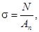
где Ап - площадь поперечного сечения нетто элемента.
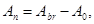
где А0 - площадь ослаблений элемента.
4.15. Следует иметь в виду, что проверку прочности центрально-сжатых и сжато-изогнутых элементов необходимо проводить в соответствии с [п. 4.1].
4.16. Расчет экструзионных плит и панелей на температурные и влажностные воздействия следует производить по [п. 4.29].
5. РАСЧЕТ ЭЛЕМЕНТОВ СОЕДИНЕНИЙ АСБЕСТОЦЕМЕНТНЫХ КОНСТРУКЦИЙ
5.1. Коэффициент 0,25 в формуле [64] принят с учетом требований [п. 6.10], которыми предусматривается создание податливости соединения путем увеличения диаметра отверстия в каркасе и установки упругих прокладок и шайб между каркасом и обшивкой.
5.2. Коэффициент 0,6 в формуле [65] принят с учетом податливости соединения.
6. УКАЗАНИЯ ПО ПРОЕКТИРОВАНИЮ АСБЕСТОЦЕМЕНТНЫХ КОНСТРУКЦИЙ
6.1. [6.1]. Асбестоцементные плиты и панели следует применять при условии защиты конструкций от коррозии в соответствии с указаниями [п. 1.8] в наружных ограждениях - при влажности внутреннего воздуха помещений не более 75 %, во внутренних ограждениях - при влажности не более 85 %.
Указанные ограничения введены на основе анализа опыта строительства, в основном сельскохозяйственных производственных зданий, где влажность основных помещений для содержания птиц и животных составляет 60 - 75 %. В объектах с более высокой влажностью применение асбестоцементных плит и панелей возможно при принятии дополнительных, сравнительно с типовыми, конструктивных решений по защите поверхностей и вентилирования внутренних полостей плит и панелей.
Допустимые значения средней температуры наружного воздуха наиболее холодных суток, °С, для стен промышленных зданий из асбестоцементных экструзионных панелей в зависимости от температуры и относительной влажности внутреннего воздуха приведены в табл. 2.
Допустимые значения средней температуры наружного воздуха наиболее холодных суток, °С, для покрытия промышленных зданий из асбестоцементных экструзионных плит покрытия в зависимости от температуры и относительной влажности внутреннего воздуха приведены в табл. 3.
6.2. [6.2]. При проектировании асбестоцементных конструкций для зданий, возводимых в районах с температурой наружного воздуха наиболее теплых и холодных суток соответственно выше 25 °С и ниже минус 40 °С, следует применять прессованные асбестоцементные листы.
При проектировании каркасных плит и панелей для внутренних ограждений зданий с мокрым режимом помещений следует применять также прессованные асбестоцементные листы.
Указанные наружные и внутренние условия эксплуатации требуют использования асбестоцементных листов повышенной плотности, прочности и морозостойкости. Такие листы выпускаются промышленностью, в технологический процесс их производства включено уплотнение прессованием при давлении до 20 МПа.
6.3. [6.4]. В каркасных и бескаркасных плитах и панелях следует применять асбестоцементные листы с влажностью не более 8 % по массе.
В каркасных и бескаркасных экструзионных плитах и панелях влажность минераловатного утеплителя не должна превышать 8 % по массе.
Испытаниями установлено, что равновесная влажность листового асбестоцемента после 7 - 10-дневной выдержки в помещении при температуре свыше 12 % и влажности 50 - 60 % составляет не более 7 - 8 %, а экструзионного - 4 - 5 % по массе. Эти значения влажности должны приниматься при расчетах напряжений и деформаций конструкций при эксплуатации как начальные. При этом принимается, что в процессе транспортирования и хранения конструкции защищены от увлажнения капельной влагой.
6.4. [6.5]. В проектах следует указывать условные обозначения и сорт асбестоцементных листов в соответствии с государственными стандартами и техническими условиями и принятые величины временных сопротивлений (пределы прочности) изгибу.
В прил. 1 Пособия приведен справочный материал по асбестоцементным изделиям и конструкциям, выпускаемым промышленностью. Рекомендуется применять листы высших сортов, строго контролируя применяемые листы по сортам и маркам.
Таблица 2
|
Тепловая инерция, м2V°С/Вт |
Приведенное сопротивление теплопередаче, м2 V°С/Вт |
Температура воздуха в помещении, °С |
||||||||||||
|
16 |
18 |
20 |
||||||||||||
|
Относительная влажность воздуха в помещении, % |
||||||||||||||
|
до 50 |
св. 50 до 60 |
св. 60 до 70 |
св. 70 до 75 |
до 50 |
св. 50 до 60 |
св. 60 до 70 |
св. 70 до 75 |
до 50 |
св. 50 до 60 |
св. 60 до 70 |
св. 70 до 75 |
|||
|
0,12 |
1,6 |
0,9 |
-45 |
-30 |
-17 |
-10 |
-44 |
-28 |
-15 |
-7 |
-43 |
-27 |
-12 |
-6 |
|
0,14 |
1,9 |
1 |
-50 |
-37 |
-23 |
-15 |
-48 |
-35 |
-20 |
-12 |
-47 |
-33 |
-18 |
-11 |
|
0,16 |
2,1 |
1,2 |
- |
-45 |
-28 |
-20 |
- |
-43 |
-27 |
-18 |
- |
-40 |
-25 |
-16 |
|
0,18 |
2,3 |
1,3 |
- |
- |
-33 |
-24 |
- |
- |
-32 |
-22 |
- |
- |
-31 |
-21 |
|
Тепловая инерция, м2°С/Вт |
Приведенное сопротивление теплопередаче, м2 V°С/Вт |
Температура воздуха в помещении, °С |
||||||||||||
|
16 |
18 |
20 |
||||||||||||
|
Относительная влажность воздуха в помещении, % |
||||||||||||||
|
до 50 |
св. 50 до 60 |
св. 60 до 70 |
св. 70 до 75 |
до 50 |
св. 50 до 60 |
св. 60 до 70 |
св. 70 до 75 |
до 50 |
св. 50 до 60 |
св. 60 до 70 |
св. 70 до 75 |
|||
|
0,12 |
1,6 |
1 |
-49 |
-33 |
-19 |
-11 |
-47 |
-32 |
-17 |
-9 |
-46 |
-30 |
-15 |
-7 |
|
0,14 |
1,9 |
1,1 |
- |
-41 |
-26 |
-16 |
-50 |
-40 |
-23 |
-14 |
-49 |
-38 |
-21 |
-12 |
|
0,16 |
2,1 |
1,3 |
- |
-49 |
-30 |
-21 |
- |
-47 |
-28 |
-19 |
- |
-46 |
-26 |
-17 |
|
0,18 |
2,3 |
1,4 |
- |
- |
-36 |
-26 |
- |
- |
-34 |
-23 |
- |
- |
-32 |
-22 |
|
Примечания к табл. 1 и 2: 1. Панели толщиной 0,12 м соответствуют ТУ 21-24-82-81 и имеют однорядное расположение ячеек по сечению; панели толщиной 0,14; 0,16; 0,18 м соответствуют ТУ 21-24-98-82 и имеют двухрядное расположение ячеек по сечению. 2. Приведенное сопротивление теплопередаче дано при условии качественного заполнения полостей панелей минераловатным утеплителем с теплопроводностью не более 0,07 Вт/м2·°С с учетом термического сопротивления четырехслойного рубероидного ковра. 3. Температуры даны из условия отсутствия конденсации влаги на нижней поверхности плит в зоне продольных стыков при качественном заполнении их минераловатным утеплителем. 4. В связи с недостаточной изученностью поведения асбестоцементных экструзионных конструкций в суровых климатических условиях область их применения ограничивается расчетной температурой -50 °С. 5. Толщина панели выбирается для каждого конкретного вида здания и места строительства по СНиП II-3-79** (п. 2.1, 2.15). |
||||||||||||||
6.5. [6.8]. В каркасных асбестоцементных плитах и панелях, в которых каркас соединяется с асбестоцементными листами на клею, на концевых участках каркасов следует предусматривать установку по одному болту, винту или заклепке.
Это требование связано с повышением огнестойкости рассматриваемых плит и панелей. После выгорания клея в швах сохраняется пониженная несущая способность конструкций, возрастает предел огнестойкости.
6.6. При проектировании асбестоцементных плит с деревянным каркасом не допускается гвоздевое соединение обшивок с каркасом. Это ограничение вызвано требованиями безопасности монтажа кровли по плитам.
Увеличение диаметра отверстия под шуруп в асбестоцементном листе требуется для обеспечения ограниченной податливости соединения с целью снижения напряжений в листе при его увлажнении. При этом несущая способность соединения определяется по [4.2].
6.7. Гвоздевое (в том числе на винтовых гвоздях) соединение допускается только для стеновых панелей. При этом решении обшивка панелей в расчет несущей способности панелей не вводится.
6.8. [6.16]. Для уменьшения влажностных деформаций следует предусматривать гидрофобизацию или защиту водостойкими красками поверхностей асбестоцементных конструкций.
Для повышения долговечности, уменьшения влажностных деформаций асбестоцементных конструкций и улучшения их вида, их поверхности окрашивают различными красками или наносят на них древесный шпон. Промышленность производит также изделия, в которые поступает красящее вещество в процессе приготовления массы, а также крупноразмерные плоские листы, окрашенные силикатными красками или синтетическими эмалями и красками.
Плоские листы, предназначенные для строительных конструкций в качестве наружной или внутренней облицовки могут быть окрашены в построечных условиях.
Окраска состоит из следующих операций:
подготовка поверхности асбестоцемента к окраске. Очищенная от грязи поверхность обдувается сжатым воздухом и обезжиривается растворителем (уайт-спирит, ацетон и др.);
приготовление окрашивающей композиции. Для окраски могут быть использованы лакокрасочные материалы, дающие атмосферо- и водостойкое покрытие. В качестве окрашивающих материалов рекомендуются перхловиниловые эмали типа ХВ-1100 (ГОСТ 6993-79*); кремнийорганические эмали КО-174 (ТУ 6-02-576-75); рабочая вязкость эмали 18 - 20 с по вискозиметру BЗ-4; нанесение эмали на поверхность листа.
Эмаль наносится краскораспылителем в 2 - 3 слоя до полной укрывистости с промежуточной сушкой каждого слоя в течение 20 - 30 мин. Окончательная сушка в течение 2 - 3 ч. Полное отверждение окрасочного слоя заканчивается на 5 - 7-е сутки.
Окрасочные эмали являются токсичными, пожаро- и взрывоопасными веществами, поэтому необходимо соблюдать нормы и правила техники безопасности.
6.9. В необходимых случаях на поверхность плит и панелей следует наносить пароизоляцию. Пароизоляционный слой наносится на плоскую асбестоцементную обшивку с внутренней ее стороны.
Выбор типа пароизоляционного слоя в каждом конкретном случае происходит согласно расчету требуемого сопротивления паропроницанию, определенного по СНиП II-3-79**.
Рекомендуемые типы пароизоляционных слоев приведены в табл. 4. Пример расчета представлен в Руководстве по теплотехническому расчету и проектированию ограждающих конструкций (М.: Стройиздат, 1985).
6.10. По [п. 6.21] не допускается приложение к асбестоцементным листам, обшивкам каркасных и бескаркасных плит и панелей сосредоточенных нагрузок (от трубопроводов, оборудования и т.п.). Приложение таких нагрузок допускается к экструзионным плитам и панелям, а также к каркасам плит и панелей.
При приложении указанных нагрузок к плитам и панелям должен проводиться расчет на прочность и деформации узла крепления, а также плит и панелей с учетом всех действующих на конструкцию нагрузок и воздействий.
Таблица 4
|
Материалы слоев пароизоляции |
|||
|
грунтовые слои |
покрывные слои |
Количество слоев (толщина, мкм) |
|
|
5 |
Масляная краска для внутренних работ |
Масляная краска для внутренних работ |
1 + 1 (100) |
|
10 |
Нефтеполимерная краска (разбавленная уайт-спиритом) |
Нефтеполимерная краска |
1 + 1 (75) |
|
ЛакиПФ-170; ПФ-71 |
Эмали ПФ-115; ПФ-133 |
1 + 2 (75) |
|
|
20 |
То же, или лак ХС-724 |
То же, или эмали ХС-710; ХС-759 |
1 + 3 (150) |
|
30 |
Тоже |
То же |
1 + 4 (200) |
|
75 |
Пленка полиэтиленовая или дублированная |
Полиэтиленовая пленка (с клеящим слоем) толщиной 0,16 мм |
2 1 |
|
Примечание. Лакокрасочные материалы должны соответствовать следующим стандартам или ТУ: нефтеполимерная краска - ТУ 21 РСФСР 549-77; лаки ПФ-170, ПФ-171 - ГОСТ 15907-70*; эмаль ПФ-115 - ГОСТ 6465-76*; пленка полиэтиленовая ГОСТ 10354-82*; рубероид марки РМ-350 - ГОСТ 10923-82*; латекс марки ЛСП-901; эмаль ХС-710 - ГОСТ 9355-81*; эмаль ХС-759; масляные краски для внутренних работ - ГОСТ 10503-71*. |
|||
7. ПРИМЕРЫ РАСЧЕТА АСБЕСТОЦЕМЕНТНЫХ КОНСТРУКЦИЙ
7.1. В настоящем разделе приведены примеры расчета основных типов асбестоцементных конструкций: волнистых листов (пример 1), плит с деревянным каркасом под волнистую (пример 2) и рулонную (пример 3) кровлю, плит с асбестоцементным каркасом под волнистую кровлю (пример 4), стеновой панели с металлическим каркасом (пример 5), экструзионной стеновой панели (пример 6), бескаркасной (трехслойной) стеновой панели (пример 7), стойки из экструзионного швеллера (пример 8), экструзионной плиты (пример 9).
7.2. Расчет конструкций на температурно-влажностные воздействия показан на примере расчета экструзионной стеновой панели.
ПРИМЕР 1. РАСЧЕТ ВОЛНИСТОГО ЛИСТА ДЛЯ КРОВЛИ
Исходные данные для расчета листа
Кровля выполнена из волнистого листа типа УВ-7,5-175 (ГОСТ 16233-77*) высшего сорта, первой категории качества. Предел прочности - не менее 20 МПа. Кровля не имеет снизу чердачного настила. Волнистый лист не защищен водостойким покрытием. Район строительства - Московская обл. Температура эксплуатации не превышает 40 °С. Волнистые листы опираются на прогоны с шагом по горизонтали 1,5 м.
Расчет листа
Расчет листа производится по [п. 4.14] на действие снеговой нагрузки, а также на действие сосредоточенной нагрузки (вес рабочего с инструментом), приложенной к гребню любой из средних волн.
А. Определение нагрузок
Значения кратковременной и временной длительной снеговой нагрузок, полученные для Московской обл. (III район по весу снегового покрова) по СНиП 2.01.07-85, с шириной листа 1 м, равны:
нормативные значения:
кратковременная 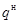
временная длительная qg = 300 ∙ Н/м;
расчетные значения:
кратковременная 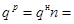
временная длительная q = 300 ∙ 1,6 = 480 Н/м.
Значение постоянной нагрузки от собственной массы листа, равной по ГОСТ 16233-77 330 Н, составляет:
нормативное значение
q = 330/1,75 = 189 Н/м;
расчетное значение
q = 189 ∙ 1,2 = 226 Н/м.
Расчетная сосредоточенная нагрузка от веса рабочего с инструментом составляет по СНиП 2.01.07-85 1000 H ∙ 1,2 = 1200 Н.
Б. Определение усилий
Определяем усилия, возникающие в листе от нагрузок, с учетом заданных условий опирания и работы листа по балочной схеме.
Определяем расчетный момент от всех нагрузок (равномерно распределенной снеговой нагрузки и от собственной массы):
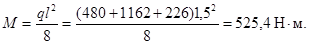
Учитывая по [п. 3.2, а] снижение расчетных сопротивлений асбестоцемента при расчете на действие только постоянных и временных длительных нагрузок, определим расчетный момент от действия этих нагрузок
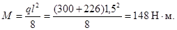
Поперечная сила Q при расчете волнистых листов не определяется вследствие незначительности возникающих касательных напряжений.
В. Определение геометрических характеристик листа
Определяем геометрические характеристики листа при равномерно распределенной и сосредоточенной нагрузках соответственно по формулам [33] и [35]:
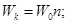 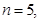 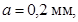 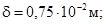
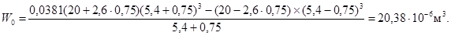
При расчете на равномерно распределенную нагрузку 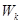
Сначала определяем отношение 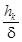
При расчете на сосредоточенную нагрузку, определяя коэффициент С по [рис. 6], получим:
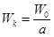
Ik = 1,02 · 6,15/2 = 3,14 · 10-8 м4.
Момент инерции плоского листа (на единицу ширины)
Id = 0,753/12 = 0,0352 · 10-8 м4;
Ik/Id = 3,14 · 10-8/0,0352 · 10-8 = 89,2.
Величина коэффициента С [по рис. 6] при значении a/l = 20/150 = 0,133 и полученных значениях Ik и Id равна 0,72.
Г. Определение напряжений в листе
Напряжения в листе равны:
от действия всех равномерно распределенных нагрузок по формуле [31]:
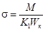
от действия постоянных и временных длительных нагрузок по формуле [31]:
= 148/75,41 · 10-6 = 1,95 МПа;
от действия сосредоточенной нагрузки по формуле [32] с
учетом коэффициента 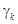
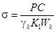
Д. Определение прогиба листа
Определяем прогиб от действия нормативного значения равномерно распределенной нагрузки по формуле
F = (5/384)(ql4 /EL)
Прогиб листа с учетом снижения модуля упругости Е асбестоцемента [п. 3.4] следует определять как на действие всех нагрузок, так и на действие постоянных и временных длительных нагрузок.
Принимаем модуль упругости асбестоцемента при расчете на действие всех нагрузок по [табл. 2] Е = 0,13 · 105 МПа.
Модуль упругости асбестоцемента при расчете на действие постоянных и временных длительных нагрузок в соответствии с [п. 3.4] будет равен:
Е = 0,13 · 105 · 0,65 = 0,0845 · 105 МПа.
Используя полученные выше значения нормативных нагрузок и момента инерции I, определяемого по формуле [33]:
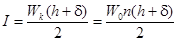
получим следующие значения прогиба:
при расчете на действие всех нагрузок
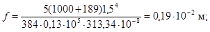
при расчете на действие постоянных и временных длительных нагрузок
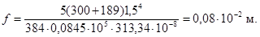
Проверка прочности и прогиба листа
А. Определение расчетных сопротивлений асбестоцемента
Определение расчетного сопротивления асбестоцемента производится по [пп. 3.1 и 3.2].
Определяя 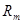
Коэффициент условий работы при расчете листа на действие равномерно распределенных нагрузок можно определить по формуле, аналогичной приведенной в [п. 3.2а].
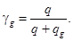
Тогда, γg = (226 + 480 + 1162)/(226 + 480 + 1162 + 226 + 480) = 0,73.
Учитывая, что волнистый лист не защищен влагонепроницаемым покрытием, вводим коэффициент γω = 0 [п. 3.2б].
Проверка прочности листа
При проверке прочности листа получим:
при действии всех равномерно распределенных нагрузок
σ = 6,9 МПа
< 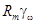
при действии постоянных и временных длительных равномерно распределенных нагрузок
σ = 1,95 МПа < 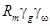
при действии сосредоточенной нагрузки
σ = 15,3 МПа < = 19 · 0,8 = 16,2 МПа.
Проверка прогиба листа
В соответствии с [п. 4.24 и табл. 7] получим:
при действии всех нагрузок
f = 0,19 · 10-2 < (1/150)l = (1/150)1,5 = 1 · 10-2 м;
при действии постоянных и временных длительных нагрузок
f = 0,08 · 10-2 < (l/150)l = 1 · 10-2 м.
ПРИМЕР 2. РАСЧЕТ ПЛИТЫ С ДЕРЕВЯННЫМ КАРКАСОМ ПОД ВОЛНИСТУЮ КРОВЛЮ
Исходные данные для расчета плиты
Асбестоцементная каркасная плита, поперечное сечение которой приведено на рис. 1, предназначается для покрытия под волнистую кровлю производственного здания, расположенного в III районе по весу снегового покрова и IV районе по ветровому напору. Каркас плиты выполнен из деревянных брусков, нижняя обшивка - из асбестоцементного плоского прессованного листа, кровля - из асбестоцементных волнистых листов УВ-7,5-175, укладываемых на крайние бруски каркаса, утеплитель из минераловатных плит γ = 125 кг/м3.
Рис. 1. Поперечное сечение плиты
1 - асбестоцементные листы УВ-75; 2 - утеплитель; 3 - бруски; 4 - асбестоцементный плоский лист
Соединение обшивки с каркасом на шурупах диаметром 4 мм с шагом 250 мм. Плита свободно опирается по коротким сторонам. Расчетный пролет 3 м. Влажность воздуха внутри помещения 75 %, температура 17 °С.
Определение напряжений в крайних ребрах каркаса и обшивке плиты
А. Определение нагрузок
Результаты определения нагрузок приведены в табл. 5.
Величины кратковременных и длительных нагрузок приведены в табл. 6.
Суммарная расчетная нагрузка на крайнее ребро плиты равна:
qp = 0,75(1,08 + 0,47 + 0,748) = 1,72 кН/м.
Постоянно и длительно действующая временная нагрузка на крайнее ребро плиты равна:
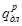
Суммарная нормативная нагрузка на крайнее ребро плиты равна:
q' = 0,75(1 + 0,61) = 1,2075 кН/м.
Среднее значение коэффициента перегрузки равно:
п = 1,72/1,2075 = 1,4244.
Б. Определение усилий
Определяя М и Q для плиты как для балки, свободно опертой по концам, получим
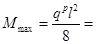
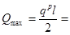
В. Определение геометрических характеристик плиты без учета податливости связей каркаса с обшивкой
Площадь поперечного сечения деревянных ребер плиты для крайнего ребра Aω = 4 · 13 = 52 см2, для среднего - Aω = 4 · 6,5 = 26 см2.
Площадь поперечного сечения нижней асбестоцементной
обшивки, включаемой в расчетное сечение, в соответствии с [п. 4.3] для
растянутых обшивок принимаем 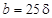 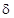 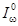
Собственный момент инерции асбестоцементной обшивки равен
I2 = 28 · 13/12 = 2,3 см4.
Таблица 5
|
Нормативная нагрузка, кн/м2 |
Коэффициент перегрузки |
Расчетная нагрузка, кН/м2 |
Основание |
|
|
Снеговая нагрузка (III снеговой район) |
1 |
1,55 |
1,55 |
|
|
Итого |
1 |
- |
1,55 |
|
|
Собственный вес: |
||||
|
плоский асбестоцементный лист |
0,18 |
1,2 |
0,22 |
|
|
волнистый асбестоцементный лист |
0,23 |
1,2 |
0,28 |
|
|
утеплитель |
0,16 |
1,2 |
0,2 |
СНиП II-25-80 прил. 3 |
|
деревянные бруски |
0,04 |
1,2 |
0,048 |
|
|
Итого |
0,61 |
0,748 |
Таблица 6
|
Постоянная нагрузка, кН |
Временная нагрузка |
Основание |
||
|
длительная, кН/м2 |
кратковременная, кН/м2 |
|||
|
Снеговая нагрузка |
- |
0,3 · 1,55 = 0,47 |
0,7 · 1,55 = 1,08 |
|
|
Собственный вес |
0,748 |
- |
- |
|
|
Итого |
0,748 |
0,47 |
1,08 |
|
В соответствии с формулой [24] расстояние от нижней кромки асбестоцементного листа обшивки до центра тяжести всего сечения, приведенного к материалу каркаса, будет определено следующим образом:
преобразуем формулу [24], разделив числитель и
знаменатель на 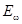 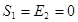
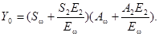
Таким образом, в примерах 2 - 4 будем преобразовывать
используемые из СНиПа формулы, в которые входят сомножителями модули упругости
каркаса и обшивок 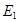 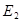
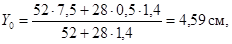
так как отношение модуля упругости обшивки к модулю упругости каркаса равно:
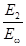
Приведенный к материалу каркаса момент инерции всего сечения будет равен:
Iω = 732,3 + 52(7,5 - 4,59)2 = 1172,64 см4;
I2 = [2,3 + 28(4,59 - 0,5)2]1,4 = 659 см4;
Ir = 1172,64 + 659 = 1831,64 см4.
Статический момент нижней обшивки относительно центра тяжести сечения будет равен:
= 1,4 · 28(4,59 - 0,5) = 160,33 см3.
Г. Определение геометрических характеристик плиты с учетом податливости связей каркаса с обшивкой
Принимаем шаг шурупов, с помощью которых прикрепляется асбестоцементный плоский лист к деревянному каркасу, равным 250 мм, т.е. на половине пролета имеется = 6 шурупов, не считая шурупа, установленного по середине пролета.
Учитывая, что расчет ведется для свободно опертых каркасных плит на действие равномерно распределенной нагрузки, коэффициент т определяем по формуле (2) Пособия.
В соответствии с графиком на [черт. 3] и при диаметре стального шурупа d = 0,4 см значение коэффициента равно:
= 62 · 10-5. Коэффициент Km = 1 для стального шурупа [п. 4.7] В нашем случае асбестоцементная обшивка имеется только в нижней части плиты, т.е. . Тогда
В соответствии с формулой [23] определим ограничение на т:
следовательно, т > т0.
Для расчета каркаса принимаем т = т0, а для расчета обшивок принимаем т = 0,714 (см. Общ. ч. настоящего Пособия).
Определим новое положение нейтральной оси с учетом податливости связей по формуле [18] и соответствующие моменты инерции каркаса и обшивки: для определения напряжений в обшивках
Iω = 732,3 + 52(7,5 - 5,05)2 = 1044,43 см4;
I2 = 1,4[2,3 + 28(5,05 - 0,5)2] = 814,76 см4;
для определения напряжений в каркасе
= 732,3 + 52(7,5 - 5,49)2 = 942,38 см4;
= 1,4[2,3 + 28(5,49 - 0,5)2] = 979,3 см4;
Д. Определение напряжений в крайних ребрах каркаса и обшивке плиты
Напряжения в обшивке и каркасе плиты определяются по [п. 4.12] и формулам [12], [13].
Определим коэффициент для расчета напряжений в обшивках и каркасе по формуле [19]:
для расчета напряжений в обшивках
для расчета напряжений в каркасе
По формуле [12] определяем напряжения в обшивке плиты.
Так как = 0, то
В месте контакта обшивки с каркасом
По формуле [13] определяем напряжения в крайнем ребре каркаса:
в сжатой зоне
в растянутой зоне
Определяем касательные напряжения в каркасе по формуле [14]:
Ir = 942,38 + 979,30 = 1921,68 см4;
Sr = 1,4 · 28(5,49 - 0,5) + 4,49 · 4 · 2,24 = 235,9 см3;
τω = 2,58 · 235,9/4 · 1921,68 = 0,79 МПа.
Определение напряжений в среднем ребре каркаса и обшивке плиты
А Подсчет нагрузок
На среднее ребро может случайно воздействовать сосредоточенная сила Р в середине пролета, равная собственному весу человека с инструментом. Согласно СНиП 2.01.07-85 сосредоточенная сила Р = 1 кН, а коэффициент перегрузки равен 1,2. Тогда расчетная величина РP = 1 · 1,2 = 1,2 кН.
Б. Определение усилий М и Q
Максимальное значение поперечной силы
Максимальное значение изгибающего момента
В. Определение геометрических характеристик плиты без учета податливости связей каркаса с обшивкой
Подбор сечения ребра осуществляется по той же схеме, что и подбор сечения крайних ребер.
Определим положение нейтральной оси в соответствии с [п. 4.9] без учета податливости связей ребра с обшивкой. Площадь поперечного сечения промежуточного ребра в два раза меньше крайнего, т.е. 6,5 · 4 = 26 см2. Ширина обшивки, включаемая в расчет, согласно [п. 4.3] будет равна b2 = 2 · 25 = 50 см.
Y = (26 · 4 + 50 · 0,5 · 1,4)/(26 + 50 · 1,4) = 1,448 см.
Момент инерции и статический момент сдвигаемой части сечения (обшивки) относительно нейтральной оси будут равны:
4 · 6,53/12 = 91,54 см;
91,54 + 26(4,25 - 1,448)2 = 295,67 см4;
1,4[50 · 13/12 + 50(1,448 - 0,5)2] = 68,74 см4;
50 · 1,4(1,448 - 0,5) = 64,36 см3;
295,67 + 68,74 = 364,41 см4.
Г. Определение геометрических характеристик плиты с учетом податливости связей каркаса с обшивкой
Угол поворота опорного сечения
По формуле [21] определяем величину т:
По формуле [23] получим:
Величины т и m0 оказались практически равными. Принимаем т = 0,83 для расчета ребра и обшивки.
Определяем новое положение нейтральной оси в соответствии с [п. 4.4] по формуле [18]
Y = (26 · 4,25 + 50 · 0,5 · 1,4 · 0,83)/(26 + 0,83 · 50 · 1,4) = 1,66 см;
моменты инерции каркаса и обшивки будут равны:
91,54 + 26(4,25 - 1,66)2 = 265,95 см4;
1,4[50 · 13/12 + 50(1,66 - 0,5)2] = 100 см4.
Д. Определение напряжений в среднем ребре и редуцируемой части обшивки
По формуле [19] находим коэффициент = (365,95 - 100 · 0,832)/(265,95 + 100×0,832) = 0,5886.
В обшивке напряжения определяются по формуле [12]
В среднем каркасе напряжения определяются по формуле [13]:
в сжатой зоне ребра
в растянутой зоне ребра
= 265,95 + 100 = 365,95 см4;
= 1,4 · 50(1,66 - 0,5) + 0,66 · 4 · 0,33 = 82,07 см3;
= 0,6 · 82,07/4 · 365,95 = 0,0337 МПа.
Проверка прочности элементов плиты
Проверка прочности элементов плиты проводится по [п. 4.1] и формулам [1] - [4].
А. Определение расчетных сопротивлений плоского прессованного асбестоцементного листа
Прессованный плоский асбестоцементный лист принят в соответствии с [п. 6.2].
В соответствии с ГОСТ 18124-75* первый сорт прессованного асбестоцементного плоского листа имеет временное сопротивление изгибу 23 МПа.
В соответствии с рекомендациями [п. 3.1] следует принимать временное сопротивление изгибу для расчета плиты, равное 23 · 0,9 = 20,7 МПа. Так как такого временного сопротивления изгибу в [табл. 1] нет, то следует принимать значения расчетных сопротивлений асбестоцемента, находящиеся в ближайшей графе, т.е. соответствующие временному сопротивлению изгиба 20 МПа. Следовательно Rc = 30,5 МПа, Rt = 8,5 МПа и Rst = 14,5 МПа.
Кроме этого, расчетные сопротивления следует умножить на коэффициент условия работы в соответствии с [п. 3.2а].
Так как нормальные напряжения пропорциональны нагрузкам, то можно записать коэффициент условия работы в виде
Тогда Rc = 30,5 · 0,653 = 19,92 МПа;
Rc = 8,5 · 0,653 = 5,55 МПа;
Rst = 14,5 · 0,653 = 8,47 МПа.
Так как плита эксплуатируется в помещениях с повышенной влажностью (75 %), то необходимо ввести дополнительный коэффициент условия работы согласно [п. 3.2б] равный γω = 0,8. Следовательно,
Rc = 19,92 · 0,8 = 15,95 МПа;
Rt = 5,55 · 0,8 = 4,45 МПа;
Rst = 8,47 · 0,8 = 6,88 МПа.
Определение расчетных сопротивлений каркаса и производится по СНиП II-25-80 «Деревянные конструкции» для древесины II категории расчетное сопротивление древесины вдоль волокон сжатию = 13 МПа, растяжению = 10 МПа, скалыванию = 1,6 МПа.
Принимая, что конструкция плиты будет эксплуатироваться в помещениях с влажностью внутри помещений до 75 % и в соответствии с табл. 2 СНиП II-25-80, температурно-влажностные условия эксплуатации будут соответствовать категории А2 при установившейся температуре воздуха до 35 °С. Коэффициент условия работы = 1 принимается в соответствии с [п. 3.2а, б].
Кроме того, в соответствии с п. 3.2 СНиП II-25-80 напряжения от постоянных и длительно действующих нагрузок не превышают 80 % от напряжений, возникающих от всех видов нагрузок.
Б. Проверка прочности крайних ребер каркаса и обшивки плиты
Напряжения в крайнем ребре:
= 13,49 МПа < = 13 МПа (с точностью до 5 %);
σωt = 7,91 МПа < = 10 МПа;
τω = 0,79 МПа < = 1,6 МПа.
Напряжения в обшивке, в зоне крепления к крайним ребрам каркаса плиты σ2 = 4,3 МПа < Rt = 4,45 МПа.
В. Проверка прочности среднего ребра и обшивки в зоне крепления к среднему ребру
В сжатой зоне среднего ребра напряжения превышают расчетные, однако так как воздействие сосредоточенной силы на среднее ребро носит случайный характер (по ТУ хождение по средним ребрам в момент монтажа покрытия запрещено), то полученные напряжения можно сравнить с нормативной величиной сопротивления древесины сжатию равной согласно СНиП II-25-80 23 МПа:
= 15,67 МПа < = 23 МПа;
= 1,774 МПа < = 10 МПа;
τω = 0,037 МПа < = 1,6 МПа.
Напряжения в обшивке σ2 = 5,184 МПа; Rst = 6,88 МПа.
Расчет и проверка прочности элементов соединения обшивок с каркасом
Расчет элементов соединения обшивок с каркасом следует производить по формуле [25]:
где Ts определяется по формулам [62], [63] и [65].
Для расчета обшивок принят т = 0,714.
А. Определение левой части формулы [25]
Определение статических и геометрических характеристик:
Sr = 28(5,05 - 0,5)1,4 = 178,36 см3;
Ir = 1044,43 + 814,76 = 1859,19 см4;
nc = 6, (Мс - Мb) = 193,5 кН · см.
Левая часть формулы [25] будет равна:
0,814 · 178,36 · 193,5/5 · 1859,16 · 16 = 0,5 кН.
Б. Определение правой части формулы [25]
Из условия смятия материала каркаса правая часть формулы [25] определяется по формуле [62]:
Правая часть формулы [25] из условия смятия обшивок определяется по формуле [65]:
Ts = 0,6 · 0,4 · 1 · 19,92 · 10-1 = 0,48 кН.
В. Проверка прочности
Следовательно, левая часть формулы [25] с точностью до 5 % равна минимальному значению правой части.
Расчет и проверка прогиба плиты
Расчет плиты по предельному состоянию второй группы производится в соответствии с [пп. 4.24, 4.25].
В соответствии с [п. 4.24] предельный прогиб плит покрытий приведен в [табл. 7] и равен f/l = 1/200.
Максимальный прогиб в середине пролета плиты будет равен
Жесткость на изгиб D в соответствии с [п. 4.25] определяется по формуле
.
Момент инерции поперечного сечения крайнего ребра определяем с минимальным из полученных т и т0 значений коэффициентов податливости, т.е. по формуле [16]:
= 942,38 + 979,3 = 1921,68 см4;
D = 1921,68 · 104 МПа · см4;
т.е.
ПРИМЕР 3. РАСЧЕТ ПЛИТЫ С ДЕРЕВЯННЫМ КАРКАСОМ ПОД РУЛОННУЮ КРОВЛЮ
Исходные данные для расчета плиты (рис. 2)
Расчетный пролет плиты l = 300 см.
Наиболее нагруженными являются два промежуточных ребра, так как нагрузка, воспринимаемая ребром, собирается с двух полупролетов справа и слева от ребра.
Рис. 2. Поперечите сечение плиты
1 - асбестоцементные плоские листы; 2 - доски; 3 - утеплитель
Расчет напряжений в элементах плиты
А. Подсчет нагрузок
Согласно проекту вес 1 м2 плиты 0,53 кН/м2.
Для Московской области снеговая нагрузка равна 1 кН/м2.
Вес рулонного ковра принимаем 0,15 кН/м2, коэффициент перегрузки согласно СНиП 2.01.07-85 равен 1,2.
Постоянно действующая нагрузка будет равна (0,53 + 0,15)1,2 = 0,816 кН/м2.
Коэффициент перегрузки для снегового покрова согласно СНиП 2.01.07-85 будет равен 1,5675 ≈ 1,57.
Временная длительно действующая нагрузка согласно СНиП 2.01.07-85 будет равна 0,3 · 1,57 = 0,47 кН/м2.
Кратковременно действующая снеговая нагрузка будет равна 0,7 · 1,57 = 1,1 кН/м2
Суммарная нагрузка составит
qP = 0,816 + 1,57 = 2,386 кН/м2.
Длительно действующая нагрузка составит
= 0,816 + 0,97 = 1,286 кН/м2.
Равномерно распределенная нагрузка на расчетное среднее ребро равна:
qP = 2,386 · 0,435 = 1,234 кН/м2;
= 1,286 · 0,435 = 0,559 кН/м2.
Б. Подсчет усилий М и Q
М = 1,234 · 32/8 = 1,38825 кН · м;
Q = 1,234 · 3/2 = 1,851 кН.
В. Определение геометрических характеристик расчетного сечения плиты
В соответствии с [п. 4.3] для сжатых обшивок принимаем часть обшивки, редуцируемой к ребру, по формуле [17]:
= 18 см, с двух сторон - 36 см;
= 25 см, с двух сторон - 50 см, т.е. сечение получается несимметричным (рис. 3).
Рис. 3. Расчетное сечение плиты
1 - асбестоцементные плоские листы; 2 - доска (каркас)
Определяем положение нейтральной оси сечения по формуле [24] без учета податливости соединений ребер каркаса с обшивками
Y0 = (52 · 7,5 + 1,4 · 36 · 14,5 + 1,4 · 50 · 0,5)/[52 + (36 + 50)]1,4 = 6,7 см.
Определяем моменты инерции каркаса и обшивок.
Собственный момент инерции каркаса
= 4,133/12 = 732,33 см4.
Момент инерции каркаса относительно найденной нейтральной оси
Iω = 732,33 + 52(7,5 - 6,7)2 = 765,6 см4.
Моменты инерции обшивок относительно нейтральной оси:
= [36 · 13/12 + 36(14,5 - 6,7)2]1,4 = 3070,54 см4;
= [50 · 13/12 + 50(6,7 -0,5)2]1,4 = 2696,63 см4.
Суммарный момент инерции сечения:
= 765,6 + 3070,54 + 2696,63 = 6532,77 см4.
Шурупы в плите расставлены с шагом 180 мм, т.е. = 8.
Статические моменты относительно нейтральной оси будут равны:
= 36(14,5 - 6,7)1,4 = 393,12 см3;
= 50(6,7 - 0,5)1,4 = 434 см3.
В соответствии с формулой [22] определяем коэффициент податливости соединений т: Km = 1, по графику [черт. 3] определяем = 62 · 10-5. Тогда
Определяем m0 по [п. 4.8] и формуле [23]:
т > m0, т.е. для расчета прочности каркаса принимаем т = m0; для расчета прочности обшивок принимаем т = 0,698.
Положение нейтральной оси определяем по формуле [18] с учетом коэффициента податливости соединений ребер каркаса с обшивками при т = 0,698, т.е. при т для определения напряжений в обшивках.
Определяем положение нейтральной оси:
Моменты инерции будут равны:
= 732,33 + 52(7,5 - 6,796)2 = 757,26 см4;
= [36 · 13/12 + 36(14,5 - 6,796)2]l,4 = 2995,52 см4;
= [50 · 13/12 + 50(6,796 - 0,5)2]1,4 = 2780,61 см4.
Для определения напряжений в ребре каркаса положение
нейтральной оси определяем при  = 0,137:
= 0,137:
Моменты инерции:
= 732,33 + 52(7,5 - 7,2256)2 = 736,25 см4;
= l,4[36 · l3/12 + 36(14,5 - 7,2256)2] = 2671,2 см4;
= 1,4[50 · 13/12 + 50(7,2256 - 0,5)2] = 3172,2 см4;
= 736,25 + 0,6982(2671,2 + 3172,2) = 3572,11 см4.
Определяем напряжение в ребре каркаса и обшивках. По формуле [19] определяем коэффициент для определения напряжений в обшивках:
По формулам [11] и [12] определяем напряжения в обшивках:
в нижней обшивке
= 2,58 · 5,796/6,796 = 2,21 МПа;
в верхней обшивке
= -30,21(14 - 6,796)/(15 - 6,796) = -2,73 МПа.
Определяем напряжения в каркасе по формулам [13] и [14].
По формуле [19] определяем коэффициент :
В растянутой зоне ребра
В сжатой зоне ребра
Статический момент относительно сдвигаемого сечения равен
Sr = 50 · 1,4(7,2256 - 0,5) + 4 · 6,2256 · 3,1128 = 548,31 см3.
Приведенный момент инерции согласно формуле [16] равен:
Ir = 736,25 + 0,1372(2671,2 + 3172,2) = 845,924 см4;
τω = (1,851 · 548,31)/(845,924 · 4) = 0,3 МПа.
Проверка прочности элементов плиты
Прочностные показатели материалов, из которых изготовлена плита, определены во втором примере; воспользуемся этими показателями для проверки прочности элементов плиты:
в обшивке
σ1 = 3,11 МПа < Rс = 19,92 МПа;
σ2 = 2,58 МПа < Rt = 5,5 МПа;
в ребре каркаса
σwc = 12,3 МПа < = 13 МПа;
σwt = 10,2 МПа  = 10
МПа;
= 10
МПа;
τωs = 0,3 МПа < = 1,6 МПа.
Расчет и проверка прочности элементов соединения обшивок с каркасом [по п. 4.10 и формуле (25)]
По формулам [62], [63] и [65] определим усилие допускаемое на одну связь:
= 0,6 · 0,4 · 1 · 1,992 = 0,48 кН.
По формуле [25] проверяем усилие, передаваемое на шуруп:
= 0,298 кН < Ts = 0,48 кН,
здесь определен по формуле [16] с т = 0,698, т.е. большим из значений m и m0.
Расчет и проверка прогиба плиты
Нормативное значение нагрузки равно:
qн = 0,53 + 1 + 0,15 = 1,68 кН/м2.
Жесткость на изгиб в соответствии с [п. 4.25] определяется по формуле и имеет два значения: первое - соответствует величине m0, а второе - т. Какое значение т принять для расчета?
Для обеспечения податливости, равной m0, необходимо, чтобы связи каркаса с обшивкой практически на 80 - 85 % были выключены из работы, что, вообще говоря, может произойти при длительной эксплуатации плиты в конце срока эксплуатации. Следовательно, если нужно установить прогиб плиты на ранней стадии эксплуатации, то в качестве изгибной жесткости следует принять = 3572,11 · 10 МПа×см4, если нужно определить прогиб плиты близкой к концу сроков ее эксплуатации, то нужно жесткость на изгиб принять равной = 845,924 · 104 МПа · см4.
Максимальный прогиб плиты будет при минимальном значении D, соответствующем значению m0.
Следовательно, = 845,924 · 104 МПа · см4 и прогиб при выключении из работы обшивок на 85 % будет равен
(5/384)(1,68 · 3004 · 0,5)/(845,924 · 104 · 10) = 0,994 см.
При расчетном включении обшивок в работу при соответствующем значении коэффициента податливости т = 0,698, D = 3572,11 · 104 МПа · см4, прогиб равен
f = (5/384)(1,68 · 3004 · 0,5)/(3572,11 · 104 · 10) = 0,245 см.
На ранней стадии эксплуатации плита будет иметь прогиб, равный f = (l/1220)l, что меньше допустимого (1/200)l и будет изменяться в процессе эксплуатации до значения, равного f = (l/303)l, при последующем возможном выключении из работы связей. Однако, как было показано выше, прочность плиты будет при этом находиться в допустимых пределах.
ПРИМЕР 4. РАСЧЕТ ПЛИТЫ С КАРКАСОМ ИЗ ЭКСТРУЗИОННЫХ ШВЕЛЛЕРОВ ПОД ВОЛНИСТУЮ КРОВЛЮ
Исходные данные для расчета плиты (рис. 4)
Плита покрытия размером 3´1,5 м предназначена для применения в сельскохозяйственных производственных зданиях с относительной влажностью воздуха помещения до 75 %, расположенных во II районе по весу снегового покрова.
Рис. 4. Поперечный разрез плиты
1 - асбестоцементная обшивка; 2 - пароизоляция; 3 - утеплитель; 4 - асбестоцементные экструзионные швеллера; 5 - обрешетка; 6 - волнистый лист; 7 - клей ЭПЦ-1
Каркас плиты выполнен из экструзионных асбестоцементных швеллеров. Обшивка из плоского непрессованного листа толщиной 10 мм приклеивается к каркасу клеем ЭПЦ-1. По обрешетке плиты устраивается кровля из волнистых асбестоцементных листов 54/200 с уклоном 14°. Предел прочности экструзионного и листового асбестоцемента при изгибе - не менее 16 МПа. Наружная поверхность плиты покрытия защищена влагонепроницаемым покрытием водно-дисперсной краски ВДК на основе синтетического латекса СКС-65ГП.
Подсчет нагрузок
Подсчет нагрузок производим в соответствии с СНиП 2.01.07-85 «Нагрузки и воздействия» по табл. 6.
Определение расчетных усилий
Определяем расчетные усилия, действующие на разных участках плиты; при этом нагрузку на ребра принимаем как равномерно распределенную.
Нагрузка, действующая на 1 м крайних ребер и прилегающую к ним часть обшивки:
qp = 1757 · 0,375 = 658,9 Н/м.
Максимальный расчетный изгибающий момент и поперечная сила на этом участке плиты равны
658,9 · 2,982/8 = 731,3 Н/м;
658,9 · 2,98/2 = 981,7 Н.
Нагрузка, действующая на 1 м среднего ребра и прилегающую к нему часть обшивки;
qp = 1757 · 0,75 = 1317,7 Н/м.
Таблица 6
|
Нагрузки на 1 м2 панели |
|||
|
нормативная Н/м2 |
коэффициент перегрузки |
расчетная, Н/м2 |
|
|
Постоянная от веса обшивки, пароизоляции, утеплителя, каркаса и кровли |
560 |
1,2 |
672 |
|
Кратковременная (снеговая) |
700 |
1,55 |
1085 |
|
Итого |
1260 |
1757 |
|
Максимальный расчетный изгибающий момент и поперечная сила на этом участке плиты равны:
1317,7 · 2,982/8 = 1462,6 Н/м;
1317,7 · 2,98/2 = 1963,4 H.
Нормативная нагрузка, действующая на 1 м крайних и средних ребер и прилегающие к ним части обшивки,
= 1260 · 0,375 = 473 Н/м; = 1260 · 0,75 = 946 Н/м.
Нормативная постоянная нагрузка, действующая на 1 м крайних и средних ребер и прилегающие к ним части обшивки:
= 560 · 0,375 = 210 Н/м; = 560 · 0,75 = 420 Н/м.
Определение геометрических характеристик плиты (рис. 5)
Перед определением геометрических характеристик по формуле [20] находим коэффициент т
Рис. 5. Расчетное сечение плиты
1 - асбестоцементный швеллер; 2 - асбестоцементная обшивка
А. Определение геометрических характеристик крайнего ребра и прилегающей к нему части обшивки
По формуле [18] определяем положение нейтральной оси сечения, при этом в соответствии с [п. 4.3] при расчете учитываем часть площади поперечного сечения обшивки шириной b = 25δ = 25 · 1 · 10-2 = 0,25 м:
= 582,7 · 10-8 м4 (момент инерции относительно собственной нейтральной оси); = 23,76 · 10-4 м2; = 5,7 · 10-4 м2; = 10,3 · 10-4 м2.
Статический момент площади обшивки A1 и каркаса плиты относительно оси, проходящей по нижней плоскости обшивки:
S = A1Y1 = 0,25 · 1 · 0,5 · 10-2 = 12,5 · 10-6 м3;
= 23,76 · 10-4 · 8 · 10-2 = 19,8 · 10-6 м3;
Определяем моменты инерции крайнего участка обшивки и каркаса плиты относительно нейтральной оси:
(25 · 10-2 · 10-6/12) + (4,18 · 10-2 - 0,5 · 10-2)2 · 25 · 10-4 = 341 · 10-8 м4;
582,7 · 10-8 + (8 · 10-2 - 4,18 · 10-2)2 · 23,76 · 10-4 = 929,4 · 10-8 м4.
По формуле [16] находим приведенный момент инерции сечения конструкции
929,4 · 10-8 + 0,892(0,1 · 105/0,09 · 105)341 · 10-8 = 1266,6 · 10-8 м4.
Статический момент сдвигаемой части поперечного сечения относительно нейтральной оси:
= 5,7 · 10-4(10,82 · 10-2 - 0,7 · 10-2) + 10,3 · 10-4 · 4,71 · 10-2 = 106,1 · 10-6 м3.
Б. Определение геометрических характеристик среднего ребра и прилегающей к нему части обшивки
Положение нейтральной оси и геометрические характеристики среднего ребра и прилегающей к нему обшивки определяются так же, как и для крайнего участка плиты; при этом в соответствии с [п. 4.3] расчетом учитываем часть площади поперечного сечения обшивки шириной b = 25δ = 25 · 10-2 = 0,25 м в каждую сторону от вертикальной оси ребра.
Сравнение геометрических характеристик крайних и среднего участков плиты показывает, что они отличаются в два раза. Нагрузка, которая воспринимается этими участками, также отличается в два раза, поэтому дальнейший расчет производится только для крайних участков.
Определение напряжений в каркасе и обшивке
Напряжения в элементах плиты определяются по формулам [12] - [15]. По формуле [19] определяем коэффициент
Напряжения в обшивке:
Напряжения в каркасе (швеллере):
Касательные напряжения в каркасе плиты:
Напряжения в клеевом соединении обшивки с каркасом определяем по формуле [15]:
Проверка прочности элементов плиты
Проверка прочности элементов плиты покрытия проводится по формулам [1], [3], [4], [8].
В соответствии с п. 3.2 расчетные сопротивления экструзионного и листового асбестоцемента умножаются на коэффициенты условий работы γg и γω.
Для определения γg находим значения σg.
Определяя изгибающий момент от постоянной нагрузки, получим Mg = 234 Н · м.
Рассчитываем напряжения от постоянной нагрузки в обшивке:
σg = 0,5(1 - 0,47)234 · 4,18 · 10-2 · 0,1 · 105/0,89 · 0,1 · 105 · 341 · 10-8 = 0,84 МПа.
Отсюда .
По [п. 3.2б] находим коэффициент γω = 0,9.
Проведя проверку прочности плиты, получим:
σ = 2,62 МПа < = 6 · 0,9 · 0,76 = 4,10 МПа;
σ = 6,2 МПа < = 11 · 0,9 · 0,76 = 7,52 МПа;
= 1,84 МПа < = 11 · 0,9 · 0,76 = 7,52 МПа;
τω = 0,75 МПа < = 3,2 · 0,9 · 0,76 = 2,19 МПа;
τc = 0,39 МПа < = 2,5 МПа.
Расчет и проверка прогибов плиты
Прогиб определяем по формуле
В соответствии с [п. 4.24] прогиб плит не должен превышать 1/200 пролета.
Проведя проверку прогибов, получим:
f = 0,43 · 10-2 < fпред = 1l/200 = 1 · 3/200 = 1,5 · 10-2 м.
Находим прогиб плиты от постоянной и временной длительной нагрузки. Согласно СНиП 2.01.07-85 для II снегового района вся снеговая нагрузка принимается кратковременной
.
По [п. 3.4] коэффициент условий работы для модуля упругости = 0,65:
Проведя проверку прогибов, получим
f = 0,29 · 10-2 < fпред = 1,5 · 10-2 м.
ПРИМЕР 5. РАСЧЕТ СТЕНОВОЙ ПАНЕЛИ С МЕТАЛЛИЧЕСКИМ КАРКАСОМ
В качестве примера рассмотрим расчет на прочность стеновой панели на алюминиевом каркасе с асбестоцементными обшивками.
Исходные данные для расчета панелей (рис. 6)
Обшивки крепятся к алюминиевому каркасу на винтах М6´200 001 (оцинкованные) с шагом 200 мм. Обшивки толщиной δ1 = δ2 = 10 мм. Перекрываемый пролет 300 см.
Влажность внутри помещения равна 75 %.
Расчет напряжений в элементах панели
А. Подсчет нагрузок
Расчет производится для IV ветрового района (Москва и Московская обл.). Согласно СНиП 2.01.07-85 для данного района нормативная ветровая нагрузка составит 0,55 кН/м2 для стен высотой до 10 м над поверхностью земли.
Рис. 6. Схема поперечного сечения панели
1 - алюминиевый каркас; 2 - асбестоцементные обшивки
Коэффициент перегрузки равен 1,2, т.е. расчетная ветровая нагрузка будет равна 0,55 · 1,2 = 0,66 кН/м2. Так как ширина панели равна 1,2 м, то погонная нагрузка, приходящаяся на одно ребро, составит:
qн = 0,6 · 0,55 = 0,33 кН/м; qp = 0,6 · 0,66 = 0,4 кН/м.
Б. Подсчет усилий М и Q
В. Подсчет геометрических характеристик панели (рис. 7)
Собственный момент инерции алюминиевого каркаса равен = 67,64 см4 с площадью поперечного сечения, равной Aω = 4,16 см2.
В соответствии с [п. 4.3] определим расчетное поперечное сечение b1 = 18 = 18 см + Δ; b2 = 25δ2 = 25 см + Δ, где Δ = 2,5 см, a δ1 = δ2 = 1 см.
Определим положение нейтральной оси по формуле [24]:
отношение = 0,1972, так как Eω = 7,1 · 104 МПа;
Моменты инерции ребра каркаса и обшивок и статические моменты обшивок относительно нейтральной оси будут:
= 67,64 + 4,16(6 - 5,4428)2 = 68,93 см4;
= 0,1972[20,5 · 13/12 + 0,5(11,5 - 5,4428)2] = 148,66 см4;
= 0,1972[27,5 · 13/12 + 27,5(5,4428 - 0,5)2] = 132,943 см4;
= 68,93 + 147,66 + 132,943 = 350,533 см4;
Рис. 7. Расчетное сечение панели
1 - асбестоцементная обшивка; 2 - алюминиевый каркас
20,5(11,5 - 5,4428)0,1972 = 24,487 см3;
27,5(5,4428 - 0,5)0,1972 = 26,796 см3.
По формуле 22 определяем коэффициент податливости. Для этого по графику на [черт. 3, кривая 2] определяем величину = 21 · 10-5. В соответствии с [п. 4.7] Km = 1;
hω (высота алюминиевого ребра) = 10 см;
По формуле [23] определим
Следовательно, для расчета каркаса принимаем т = m0 = 0,198, для расчета обшивок принимаем т = 0,912.
Определяем положение нейтральной оси в соответствии с [п. 4.4] по формуле [18] с учетом податливости соединений обшивок с ребрами каркаса. Для расчета каркаса принят т = 0,198, следовательно:
Моменты инерции относительно нового положения нейтральной оси будут равны:
Iω = 67,64 + 4,16(6 - 5,75)2 = 67,9 см2;
I1 = 0,1972[20,5 · l3/12 + 20,5(11,5 - 5,75)2] = 133,995 см4;
I2 = 0,1972[27,5 · 13/12 + 27,5(5,75 - 0,5)2] = 149,92 см4.
Для расчета обшивок принят m = 0,912. Определяем положение нейтральной оси при данном коэффициенте податливости:
Моменты инерции каркаса и обшивок будут равны:
Iω = 67,64 + 4,16(6 - 5,459)2 = 68,86 см4;
I1 = 0,1972[20,5 · 13/12 + 20,5(11,5 - 5,459)2] = 147,87 см4;
I2 = 0,1972[27,5 · l3/12 + 27,5(5,459 - 0,5)2] = 133,813 см4;
Г. Определение напряжения в обшивках и в ребре каркаса
По формулам [11] и [12] определяем напряжения в обшивках. Для этого по формуле [19] определим коэффициент при т = 0,912
Напряжения в верхней сжатой обшивке будут равны:
Напряжения в нижней растянутой обшивке будут равны:
По формуле [13] определяем напряжения в ребре каркаса. Для этого по формуле [19] определим коэффициент при т = 0,198
В растянутой зоне ребра каркаса
В сжатой зоне ребра каркаса
Определим касательные напряжения в нейтральном сечении:
Ir = 67,9 + 133,995 + 149,92 = 351,815 см4;
Sr = 0,1972 · 27,5(5,75 - 0,5) = 28,47 см3;
τω = 0,6 · 28,47/0,2 · 351,815 = 0,24 МПа.
Проверка прочности элементов панели
А. Определение расчетных сопротивлений элементов панели
Так как длительно действующие и постоянные нагрузки в направлении, перпендикулярном плоскости панели, отсутствуют, то согласно [п. 3.2а] коэффициент условия работы панели равен 1. Согласно [п. 3.2б] коэффициент условия работы панели для помещений с мокрым и влажным режимом γω = 0,8.
Следовательно, как было определено в первом примере:
Rc = 30,5 · 0,8 = 24,5 МПа; Rt = 8,5 · 0,8 = 6,8 МПа
и = 13,5 · 0,8 = 10,8 МПа.
Расчетное сопротивление алюминия марки АМцМ термически неупрочняемой = 40 МПа, = 25 МПа.
Б. Проверка прочности
В обшивках = 1,75 МПа < Rc = 24,4 МПа;
σ2 = 1,46 МПа < Rt = 6,8 МПа.
В ребре каркаса:
в сжатой зоне
σω = 29,7 МПа < = 40 МПа;
в растянутой зоне
σω = 26,9 МПа < = 40 МПа;
τω = 0,24 МПа < = 25 МПа.
Определение усилий, передаваемых на соединения обшивок с каркасом
По формуле [25] определим усилие Ts, передаваемое на одну связь:
.
Максимальное усилие на связь будет осуществляться в начальный период эксплуатации, когда реализуется коэффициент податливости т = 0,912:
= 0,1972 · 20,5(11,5 - 5,459) = 24,42 см3;
= 0,1972 · 27,5(5,459 - 0,5) = 26,89 см3.
В нижней обшивке
0,912 · 26,89 · 45000/8·5·303,15 = 91 H.
В верхней обшивке
0,912 · 24,42 · 45000/8 · 5 · 303,15 = 83 H.
По формулам [64] и [66] определим расчетные сопротивления, воспринимаемые связями, Rlp = 30 МПа, согласно СНиП II-23-81* Rbs = 130 МПа.
По формуле [64]
Ts = 0,25 · 0,2 · 0,6 · 30 · 102 = 90 H.
По формуле [66]
Ts = 0,25pd2 = 0,25 · 3,14 · 0,62 · 130 · 10-1 = 3,68 кН.
Принимаем наименьшее значение усилия, полученного по формуле [64]. Таким образом, левая часть формулы [25] равна правой ее части, полученной по формуле [64], т.е. 91Н ≈ 90Н.
Определение прогиба панели
Максимальный прогиб панели в середине пролета от равномерно распределенной нагрузки определим с учетом жесткости на изгиб, определенной по формуле [56] с коэффициентом податливости m = 0,198:
[67,9 + 0,1982(133,995 + 149,92)]7,1×104 = 561,12 мПа · см4;
т.е. прогиб составляет 1/665l, что допустимо, так как в соответствии с [п. 4.24] допустимый прогиб стеновых панелей промышленных зданий должен быть равен или меньше(1/200).
Проверим жесткость панели при m = 0,912:
= [68,86 + 0,9122(147,87 + 133,813)]7,1 · 104 = 2152,35 · 104 МПа · см4;
что составляет(1/255)l.
ПРИМЕР 6. РАСЧЕТ ЭКСТРУЗИОННОЙ СТЕНОВОЙ ПАНЕЛИ
Исходные данные для расчета панели
Панель, поперечное сечение которой показано на рис. 8, предназначается для наружного стенового ограждения производственного здания в Ровенской обл. (III район по скоростному напору ветра, т.е. q0 = 0,45 кН/м2).
Рис. 8. Поперечное сечение экструзионной панели
1 - утеплитель
Длина панели 6 м; расчетный пролет панели с учетом [п. 6.17] равен 5,92 м. Панели проектируются как навесная конструкция, крепление панели к несущему каркасу в соответствии с (п. 6.15) обеспечивает свободу ее температурно-влажностных деформаций; панель опирается по коротким сторонам.
Здание сооружается на открытой местности, имеет высоту до 10 м, имеет открывающиеся проемы (двери, ворота, окна). Влажностный режим помещения - нормальный: = 65 %; температура помещения принимается: в холодное время года = 13 °С, в теплое время года - равной среднемесячной температуре наружного воздуха в июле месяце. Панель удовлетворяет требованиям ТУ 21-24-82-81. Панель изготавливается по безавтоклавной технологии; предел прочности при изгибе (ТУ 21-24-82-81) экструзионного асбестоцемента не менее 18 МПа. Наружная поверхность панели покрашена краской, защищающей асбестоцемент от увлажнения капельной влагой.
В соответствии с [пп. 1.4 - 1.7] производим расчет стеновой панели по несущей способности и деформациям на действие ветровых нагрузок, влажностных и температурных воздействий, действующих в процессе эксплуатации.
Расчет панели на действие ветровых нагрузок
А. Подсчет нагрузок
Нормативные qн и расчетные qр значения ветровых нагрузок, полученные по СНиП 2.01.07-85 с учетом исходных данных, составляют: при положительном давлении ветра qн = 0,45 кН/м2 и qр = 0,54 кН/м2; при отрицательном давлении ветра - qн = 0,36 кН/м2 и qр = 0,43 кН/м2.
Б. Расчет напряжений в элементах панели
Расчет напряжений в элементах панели производится по [п. 4.12] и формулам [26] и [27].
Усилия М и Q определяем, учитывая частое расположение ребер (см. рис. 6) и соотношение размеров панели (ширина: длина = 1:10), а также заданное свободное опирание панели по коротким сторонам, в предположении работы панели по балочной схеме по формулам: М = 0,125ql2; Q = 0,5ql.
Определяя необходимые для расчета геометрические показатели, получим: I = 4126 · 10-8 м4; S = 417,5 · 10-6 м3; = 7 · 0,01 = 0,07 м; по [п. 6.17] l = 6 - 0,08 = 5,92 м; по [п. 4.12] h = 0,12 м, Kh = 1.
В результате получим следующие значения напряжений:
при положительном давлении ветра
в полках
в ребрах
при отрицательном давлении ветра
s1,2 = ± 1,65 МПа; sw = ±1,37 МПа; tw = 0,11 МПа.
В. Расчет прогиба панели
Расчет прогиба панели производим по формуле:
Определяем по формуле [56] жесткость на изгиб панели D, принимая по [п. 3.3] и [табл. 4] значение = 11 · 103 МПа:
D = 11 · 103 · 4126 · 10-8 = 45386 · 10-2 кН · м2 и получаем следующие значения прогиба панели:
при положительном давлении ветра
f = 5 · 0,45 · 0,6 · 5,924/384 · 45386 · 102 = 0,95 · 10-2 м
(прогиб в сторону помещения);
при отрицательном давлении ветра
f = 0,76 · 10-2 м (прогиб в сторону «улицы»).
Расчет панели на влажностные воздействия
Расчет панели производится по указаниям [пп. 4.16, 4.17, 4.19, 4.29].
При расчете панели, как следует из [п. 4.17], нужно предварительно определить нормативные и расчетные значения влажностных деформаций полок E1,2 панели.
А. Определение влажностных деформаций элементов панели
Определение влажностных деформаций производится, как следует из [п. 4.17], только для полок панели. Значения определяются в соответствии с [п. 4.19] по данным о значениях W0 и Wк.
Значение W0 принимается для экструзионного асбестоцемента по [п. 4.19]: W0 = 3,5 %.
Значение Wк материала наружной полки панели определяем по (табл. 6) для всех указанных в ней видов влажностных воздействий. Необходимые для определения Wк от воздушного увлажнения (высушивания) материала значения и найдем по данным СНиП 2.01.01-82 «Строительная климатология и геофизика»: для г. Ровно = 99 %, = 76 %. Значения Wк, соответствующие значениям и , определяем по [черт. 9, кривая 2]: Wк = 8,5 % и Wк = 3,5 %.
Для случая увлажнения наружной полки панели капельной влагой [табл. 6] Wк = 20 %. Значение конечной влажности Wк материала внутренней полки, соответствующее заданному значению φωn = 65 %, определяем по [черт. 9]: Wк = 2,8 %.
По полученным выше зачениям Wк и принятому значению W0 = 3,5 % определяем по [п. 3.7] и [черт. 1, кривая 2] нормативные значения влажностных деформаций ε1 и ε2, вызванные изменением влажности экструзионного асбестоцемента от W0 до Wк. При этом в соответствии с [п. 3.7], учитывая исходные данные о наличии защитной покраски наружной поверхности панели, значения , для случая увлажнения наружной полки капельной влагой, следует умножать на коэффициент 0,75.
Расчетные значения ε1 и ε2 определяются в соответствии с [п. 4.19] умножением нормативных значений на 1,1.
Результаты подсчета значений ε1 и ε2 приведены в табл. 7.
Б. Расчет влажностных напряжений в элементах панели и прогибов панели
Расчет напряжений в элементах панели и прогибов панели производим по [пп. 4.16, 4.17, 4.29] и формулам [36] - [39] и [60] при следующих показателях:
ε1 и ε2 - принимаем по табл. 7; = = 0 - по [п. 4.17]; E1 = E2 = Eω = 11 · 103 МПа; A1 = A2 = 0,6 · 0,01 = 60 · 10-4 м; = 7 · 0,1 · 0,01 = 70 · 10-4 м; = = 0,6 · 0,055 = 330 · 10-6 м; = (70 + 60 + 60) · 10-4 = 190 · 10-4 м.
В соответствии с [черт. 8] при , = -0,175 и = 0,175.
Определим влажностные напряжения и прогибы панели для одного из реальных случаев влажностных воздействий на панель (см. табл. 6): сочетание одновременного увлажнения наружной полки капельной влагой и воздушного высушивания внутренней полки панели.
Таблица 7
|
Вид влажностного воздействия |
Влажность материала, % по массе |
Значения e1 и e2, % |
|||
|
начальная |
конечная |
нормативные |
расчетные |
||
|
Воздушное увлажнение |
3,5 |
8,5 |
e1 = 0,05 |
e1 = 0,055 |
|
|
Наружная полка |
Воздушное высушивание |
3,5 |
3,5 |
0 |
0 |
|
Увлажнение капельной влагой |
3,5 |
2 |
e1 = 0,075´0,75 = 0,056 |
e1 = 0,062 |
|
|
Внутренняя полка |
Воздушное высушивание |
3,5 |
2,8 |
e2 = -0,0125 |
e2 = -0,0138 |
Расчетные усилия N и М, возникающие от влажностных воздействий, получим по формулам [41] и [42], подставляя соответствующие значения ε1 = 0,062 % и ε2 = -0,0138 % (см. табл. 7):
11 · 103 · 60 · 10-4(0,062 - 0,0138) = 31810 H;
11 · 103 · 330 · 10-6(0,062 + 0,0138) = 2751,5 Н · м.
Подставляя значения М и N в формулы [36] и [39], получим следующие значения напряжений:
в наружной полке
во внутренней полке
в ребре со стороны наружной полки
в ребре со стороны внутренней полки
Расчет прогиба панели производим по [п. 4.29], подставляя значения М, подсчитанные по формуле [41] для нормативных значений ε1 и ε2 (см. табл. 7), в формулу [60]:
11 · 103 · 330 · 10-6(0,056 + 0,0125 %) = 2486,6 Н · м;
Аналогичным образом производится расчет панели на другие виды возможных [см. табл. 6] влажностных воздействий (воздушное увлажнение наружной поверхности панели, воздушное высушивание внутренней поверхности панели, сочетание этих воздействий), которые, как показывает анализ, вызывают меньшие напряжения и прогибы, чем полученные выше значения.
Расчет панели на температурные воздействия
Расчет панели производится по [п. 4.16 - 4.18]. При расчете по [п. 4.17] нужно определить нормативные и расчетные значения температурных деформаций элементов панели: полок ε1 и ε2 и ребер и панели.
А. Определение температурных деформаций элементов панели
Определение температурных деформаций элементов панели производится по формулам [43] - [48], по данным и , и .
Значения и принимаем для г. Ровно по СНиП 2.01.07-85: = 26 °С (июль месяц) и = 24 °С.
Значения и принимаются в соответствии с исходными данными: = 20 °С (среднемесячная июльская температура), = 13 °С.
Необходимое для расчета значение принимается по [4.18] равным 17 °С.
Значения для экструзионного асбестоцемента принимается по [п. 3.6] и [табл. 5]; при этом учитывая, что наружная поверхность панели защищена от увлажнения капельной влагой, а максимальная влажность от воздушного увлажнения не превышает [черт. 9, кривая 2] 8,5 %, принимаем значение [табл. 5] для температур 0 °С и ниже при W < 12 %, тогда = 1,1 · 10-5 для всего диапазона температур.
Пользуясь полученными данными, подсчитаем нормативную величину температурных деформаций наружной полки для холодного времени года с помощью формул [43] и [47]:
Проведем аналогичным образом подсчет нормативных и расчетных значений деформаций элементов панели ε1 и ε2, и , необходимых для расчета температурных напряжений по формулам [36] - [39]; результаты приведены в табл. 8.
Б. Расчет температурных напряжений в элементах панели и прогибов панели
Расчет напряжений в элементах панели и прогибов панели производится по формулам [36] - [39] и [60]. Однако с учетом [п. 4.12] ограничимся расчетом только температурных прогибов экструзионной панели.
Расчет прогиба панели производится по [п. 4.29]. Определим прогиб панели от температурных воздействий, действующих в холодное время года.
Определяем по формуле [41] значение М при нормативных значениях температурных деформаций ε1 и ε2, и , из табл. 8:
= 11 · 103 · 330 · 10-6[(-0,045 %)+0,0044 %] + 0,5[(-0,045)(-0,175) + (-0,0044)0,175]11 · 103 · 70 · 10-4 · 0,1 = -1200,1 Н · м.
Тогда по формуле (60) имеем:
(прогиб в сторону помещения).
Определяем аналогичным образом прогиб панели от температурных воздействий, действующих в теплое время года:
(прогиб в сторону «улицы»).
Проверка прочности элементов панели и прогиба панели
В соответствии с требованиями СНиП 2.01.07-85 проверку прочности элементов и прогиба панели производим на действие наиболее неблагоприятного сочетания нагрузок и воздействий (с учетом возможного отсутствия некоторых из них).
А. Проверка прочности элементов панели
Определим по данным расчета панели, приведенным в табл. 9, значения неблагоприятных напряжений, возникающих в элементах панели от действия отдельных нагрузок и их основных сочетаний, и проведем проверку прочности элементов по формулам [1] - [4]. При этом в соответствии с [п. 3.1] принимаем расчетные сопротивления экструзионного асбестоцемента R [табл. 3] при значении предела прочности, равном 18 МПа/см2; в соответствии с [п. 3.2] умножаем значения R материала наружной полки, учитывая наличие водонепроницаемой краски, на = 0,9; в соответствии с СНиП 2.01.07-85 умножаем суммарные напряжения s на коэффициент nc = 0,9. Результаты проверки прочности элементов панели приведены в табл. 9.
Таким образом, из табл. 9 следует, что напряжения в элементах панели не превышают значения расчетных сопротивлений.
Таблица 8
|
Температура наружного воздуха среднесуточная |
Температура внутреннего воздуха помещения |
Элемент панели |
Значение изменения температуры элемента панели Dt1, Dt2 |
Значение температурных деформаций элемента панели ew1 и ew2 |
|||
|
нормативное |
расчетное |
нормативное |
расчетное |
||||
|
Теплое время года |
= 26 °C |
= 20 °C |
Наружная полка и примыкающее к ней волокно ребра |
= 9 °С |
= 9,9 °С |
e1 = ew1 = 0,01 % |
e1 = ew1 = 0,011 % |
|
Внутренняя полка и примыкающее к ней волокно ребра |
= 3 °С |
= 3,3 °С |
e2 = ew2 = 0,0036 % |
e2 = ew2 = 0,004 % |
|||
|
Холодное время года |
= -24 °C |
= 13 °C |
Наружная полка и примыкающее к ней волокно ребра |
= -41 °С |
= -45,1 °С |
e1 = ew1 = -0,045 % |
e1 = ew1 = -0,05 % |
|
Внутренняя полка и примыкающее к ней волокно ребра |
= -4 °С |
= -4,4 °С |
e2 = ew2 = -0,0044 % |
e2 = ew2 = -0,005 % |
|||
Таблица 9
|
Нормальные σ и касательные τ напряжения, МПа, от действия |
Значения неблагоприятных напряжений s и t, в том числе суммарных напряжений , МПа |
Расчетные сопротивления материала R, МПа |
Проверка прочности элемента по формулам [1] - [4] |
||||
|
ветровой нагрузки при давлении |
влажностных воздействий |
||||||
|
положительном |
отрицательном |
||||||
|
Полка |
крайнее волокно наружной полки |
s = - 2 |
s = 1,65 |
s = -14 |
s = 1,65 = -3,14×0,9 = -2,83 |
Rt = 6×0,9 = 5,4 Rc = 23×0,9 = 20,7 |
1,65 < 5,4; 2,82 < 20,7 |
|
Полка |
крайнее волокно внутренней полки |
s = 2 |
s = -1,65 |
s = -0,81 |
s = 2 = -2,46×0,9 = -2,16 |
Rt = 6 Rc = 23 |
2 < 6; 2,46 < 23 |
|
Ребро |
волокно, примыкающее к наружной полке |
sw = -1,72 |
sw = 1,37 |
sw1 = 5,01 |
s = -1,72 = 6,38×0,9 = 5,74 |
Rwm = 12 |
5,74 < 12 |
|
Ребро |
волокно, примыкавшее к внутренней полке |
sw = 1,72 |
sw = -1,37 |
sw2 = -1,66 |
s = 1,72 = - 3,02×0,9 = -2,73 |
Rt = 6 Rc = 23 |
1,72 < 6; 2,73 < 23 |
|
волокно по нейтральной оси |
tw = 0,139 |
tw = 0,11 |
tw = 0,139 |
Rws = 12 |
0,139 < 3,5 |
||
Б. Проверка прогиба панели
Проверка прогиба панели производится по [п. 4.24].
Как показывает анализ полученных выше данных о прогибах панели, наибольший прогиб в сторону помещения вызывает сочетание положительного ветрового давления и температурных воздействий в холодное время года f = 0,95 · 10-2 + 1,16 · 10-2 = 2,11 · 10-2 м, а наибольший прогиб панели в сторону «улицы» вызывает сочетание, включающее одновременное действие отрицательного давления ветра, увлажнения наружной поверхности и воздушного высушивания внутренней поверхности панели и температурного нагрева наружной поверхности панели f = (0,76 + 2,39 + 0,18)10-2 = 3,33 · 10-2 м.
Таким образом, максимальное значение прогиба панели с учетом коэффициента сочетания нагрузок nc = 0,9 составляет f = 3,33 · 10-2 · 0,9 = 3 · 10-2 м, что с допустимой точностью удовлетворяет требованиям [п. 4.24], в соответствии с которым величина предельного прогиба стеновой панели для промышленных зданий составляет по [табл. 7] (1/200)l, т.е. 2,96 · 10-2 м.
ПРИМЕР 7. РАСЧЕТ БЕСКАРКАСНОЙ СТЕНОВОЙ ПАНЕЛИ
Панель, поперечное сечение которой показано на рис. 9, предназначается для наружного ограждения стен производственного здания в IV районе по скоростному напору ветра.
Панель проектируется как навесная конструкция, опирающаяся по коротким сторонам.
Рис. 9. Поперечное сечение панели
1 - доска (обрамление); 2 - асбестоцементные обшивки; 3 - клеевой шов; 4 - заполнитель (пенопласт)
Исходные данные для расчета панели
Длина панели - 3 м, расчетный пролет панели с учетом [п. 6.17] равен 2,9 м. Здание сооружается на местности типа А и имеет высоту до 10 м. Панель располагается с наветренной стороны в здании с температурой воздуха t = 17 °С и нормальным влажностным режимом помещения. Обшивки 1 панели выполнены из плоского прессованного асбестоцементного листа; предел прочности асбестоцемента при изгибе - 23 МПа. Наружная поверхность панели не защищена от увлажнения. Заполнитель панели выполнен из пенопласта марки ПСБ плотностью 40 кг/м3.
Расчет напряжений в элементах панели
Расчет напряжений в элементах панели производим по [п. 4.13].
Определяя с учетом исходных данных нормативные qн и расчетные qр значения ветровых нагрузок по СНиП 2.01.07-85, получим:
= 0,55 · 1 · 0,8 = 0,44 кН/м2;
= 0,44 · 1,4 = 0,61 кН/м2.
Определяя в соответствии с [п. 4.13] при Е1 = Е2 момент инерции сечения панели, получим:
= 1,18 · 0,008(0,06 + 0,008)2/2 = 21,8 · 10-6 м4.
В результате, определяя максимальные напряжения в элементах панели по формулам [28] - [30], получим:
в обшивках
= = = ±(0,61 · 1,18 · 2,922 · 0,038/8 · 21,6 · 10-6) = ±1,318 МПа;
в заполнителе
= 0,61 · 1,18 · 2,9/(2 · 0,06 + 0,008 + 0,008) · 1,12 =
= 0,0137 МПа.
Проверка прочности элементов панели
Проверку прочности элементов панели производим по формулам [1], [2], [7].
Для определения значений расчетных сопротивлений R материала асбестоцементного листа в соответствии с [п. 3.1] исходное значение предела прочности материала, равное 23 МПа, умножаем на коэффициент 0,9, получая в результате величину предела прочности, равную 23 МПа´0,9 = 20 МПа, по которой в [табл. 1] находим значение R. При этом по [п. 3.2] умножаем значение R для увлажняемой наружной сжатой обшивки, учитывая отсутствие влагозащитной покраски, на γω = 0,8. Тогда получим Rc = 30,5 · 0,8 = 24,4 МПа, Rt = 8,5 МПа.
В соответствии с [табл. 1 прил. 2] принимаем расчетное сопротивление пенопласта сдвигу Rps = 0,04 МПа.
В результате проверки прочности элементов панели получим:
σ1 < Rc = 24,4 МПа; σ2 < Rt = 8,5 МПа; τ < Rps = 0,04 МПа.
Расчет и проверка прогиба панели
Расчет прогиба панели производим по формуле:
Определяя D по [п. 4.28], принимаем значение модуля сдвига пенопласта ПСБ = 40 кг/м3 по [табл. 1 прил. 1] Gp = 2,2 МПа, значение модуля упругости Е асбестоцемента - по [табл. 2]: Е = 14 · 103 МПа.
Тогда, по формуле [59] получим:
= 14000 · 21,8 · 10-6/2,97 = 102,7 кН · м2.
Подсчитаем прогиб панели:
f = 0,013 · 0,45 · 1,18 · 2,94/102,7 = 0,46 · 10-2 м.
Предельный прогиб панели, определяемый по [п. 4.24], составляет:
(1/200)l = (1/200)2,9 = 1,45 · 10-2 м.
Проведя проверку прогиба панели, получим:
0,46 · 10-2 < 1,45 · 10-2.
ПРИМЕР 8. РАСЧЕТ СТОЙКИ ИЗ ЭКСТРУЗИОННОГО ШВЕЛЛЕРА
Исходные данные для расчета элемента
Центрально-сжатая стойка является составным элементом подстропильной конструкции холодной чердачной крыши жилого дома (рис. 10). Внутреннее помещение чердака сообщается с наружной атмосферой через слуховые окна.
Рис. 10. Поперечный разрез крыши
1 - асбестоцементные листы; 2 - обрешетка; 3 - стропила; 4 - стойка подстропильной конструкции; 5 - чердачное перекрытие
Стойка выполнена из асбестоцементного экструзионного швеллера № 28 (рис. 11) с площадью поперечного сечения Abp = 57,24 · 10-4 м2 и минимальным моментом инерции сечения Imin = 233,6 · 10-8 м4. Предел прочности экструзионного асбестоцемента при изгибе (ТУ 21-24-82-81) не менее 16 МПа. Закрепление концов стойки шарнирное, расстояние между центрами закреплений - 2 м. Расчетная сжимающая нагрузка N = 18 кН. В местах закрепления сечение стойки ослаблено четырьмя отверстиями для болтов d = 16 мм. Защита подстропильной конструкции от увлажнения отсутствует.
Расчет напряжений в стойке
Расчет напряжений в центрально-сжатых экструзионных конструкциях следует определять по формуле [52] и п. 4.14. Определяя гибкость асбестоцементной стойки λmax с учетом [п. 4.22], получим:
.
По графику [черт. 10] находим : при λ = 94 φ = 0,27.
Рис. 11. Поперечное сечение стойки
При расчете на устойчивость определяем напряжения в стойке по формуле [52]:
18000/0,27 · 57,24 · 10-4 = 11,7 МПа.
При расчете на прочность с учетом ослаблений определяем напряжения в стойке по п. 4.14.
18000/(57,24 - 4 · 1,6 · 1,4)10-4 = 3,72 МПа.
Проверка устойчивости и прочности стойки
Проверка устойчивости и прочности стойки производится по формуле [6].
определяется по [табл. 3], при временном сопротивлении изгибу экструзионного асбестоцемента, равном 16 МПа, = 21 МПа.
При заданных условиях эксплуатации в соответствии с [п. 3.2], умножаем на коэффициент условий работы γω = 0,65.
Проведя проверку устойчивости стойки, получим
σ = 11,7 МПа < γω = 21 · 0,65 = 13,65 МПа.
Проведя проверку прочности стойки, получим
σ = 3,72 МПа < γω = 13,65 МПа.
Таким образом, прочность и устойчивость стойки обеспечена.
ПРИМЕР 9. РАСЧЕТ ЭКСТРУЗИОННОЙ ПЛИТЫ ДЛЯ БЕЗРУЛОННОЙ КРОВЛИ
Исходные данные для расчета плиты
Асбестоцементная экструзионная плита (рис. 12) предназначена для устройства двухскатной безрулонной крыши сельского жилого дома с уклоном ската кровли - 14° (рис. 13). Плиты соединены в коньке шарнирным зажимом, а в карнизе упираются в мауэрлатный элемент через соединительные изделия, входящие в зацепление с нижней полкой плит. Нормативный снеговой покров в районе строительства - 1500 Па. Масса 1 м плиты - 330 Па. Предел прочности при изгибе материала плиты - 20 МПа. Наружная поверхность экструзионной плиты защищена кремнийорганической жидкостью 136-41 (ГОСТ 10834-76*). Плита имеет следующие геометрические показатели:
Abr = 173 · 10-4; W = 440 · 10-6 см3; I = 1760 · 10-8 см4.
Подсчет нагрузок
Подсчет нагрузок производим в соответствии с СНиП 2.01.07-85 «Нагрузки и воздействия», при этом нагрузки приводим на 1 м горизонтальной проекции крыши (табл. 10).
В соответствии с СНиП 2.01.07-85 для зданий с двухскатными покрытиями при α = 14° принимаем следующую схему нагрузки (рис. 14).
Определение расчетных усилий
Максимальный изгибающий момент в покрытии
1850 · 62/32 = 2080 Н · м.
Опорные реакции А = В = 1850 · 6/2 = 5550 Н.
Распор 1850 · 62/8 · 0,75 = 11100 Н.
Поперечная сила в середине плит 5550 - 1850 · 6/4 = 2780 Н.
Продольная сила в середине плит N = Qsin + Hcos; при = 14°, sin = 0,24 и cos = 0,97, тогда N = 2780 · 0,24 + 11100 · 0,97 = 11430 Н.
Разгружающий изгибающий момент от продольной силы в середине плиты, поскольку асбестоцементные экструзионные плиты крепятся к карнизному блоку крепежными изделиями, взаимодействующими только с внутренней обшивкой плит, равен:
MN = Nl = 11430 · 3,5 · 10-2 = 400 Н · м.
Рис. 12. Поперечный разрез крыши
1 - мауэрлат; 2 - асбестоцементная экструзионная плита; 3 - коньковый зажим; 4 - чердачное перекрытие
Рис. 13. Поперечное сечение плиты
Рис. 14. Расчетная схема крыши
Таблица 10
|
Нормативное значение нагрузки, Н/м |
Коэффициент перегрузки |
Расчетное значение нагрузки, Н/м |
|
|
1. Постоянная (собственный вес плиты) |
330 · 3,1/3 = 340 |
1,2 |
408 |
|
2. Снеговая |
900 |
1,6 |
1440 |
|
3. Полная |
1240 |
- |
~1850 |
Расчетный изгибающий момент в середине левой части покрытия:
М = 2080 - 400 = 1680 Н · м.
Расчет напряжений в плите
Напряжения в сжато-изогнутых экструзионных конструкциях определяются по формулам [53] и [54].
Определяя гибкость панелей в плоскости изгиба с учетом [п. 4.221 получаем:
По [черт. 10] находим φ при λ = 97: φ = 0,23.
По формуле [55] определяем значение коэффициента :
Rc = 25 МПа, Rt = 7 МПа, Rm = 14 МПа определяем по [табл. 3] для экструзионного асбестоцемента при временном сопротивлении изгибу 20 МПа.
Рассчитываем напряжения в плите:
в растянутой полке
в сжатой полке
в растянутой зоне ребер
в сжатой зоне ребер
Проверка прочности элементов плиты
Проверку прочности элементов сжато-изогнутой плиты выполняем по формулам [1] - [3].
Расчетные сопротивления экструзионного асбестоцемента с учетом исходных данных умножаются в соответствии с [п. 3.2] на коэффициенты условий работы γg и γω.
Для определения γg находим значение σg. В соответствии с СНиП 2.01.07-85 к длительной нагрузке относится вес снегового покрова с коэффициентом К = 0,5.
Аналогично определению расчетных усилий в плите от полной нагрузки определяем изгибающий момент и продольную силу от постоянной и длительно действующей части снеговой нагрузки:
Mq = 1040 Н · м, Ng = 6980 Н.
Коэффициент по формуле [55]
Напряжение от постоянной нагрузки в растянутой полке плиты:
Тогда по [п. 3.2] коэффициент равен
По [п. 3.2б] находим коэффициент γω = 0,9.
Проведя проверку прочности элементов плиты, получим:
σt = 1,54 МПа < γωγg = 7 · 0,9 · 0,64 = 4,03 МПа;
σc = 8,24 МПа < γωγg = 25 · 0,9 · 0,64 = 14,4 МПа;
σω = 6,34 МПа < γωγg = 14 · 0,9 · 0,64 = 8,05 МПа.
Таким образом, прочность асбестоцементной экструзионной плиты обеспечена.
ПРИЛОЖЕНИЕ 1
Справочное
ОСНОВНЫЕ ХАРАКТЕРИСТИКИ ВЫПУСКАЕМЫХ ПРОМЫШЛЕННОСТЬЮ АСБЕСТОЦЕМЕНТНЫХ ИЗДЕЛИЙ И КОНСТРУКЦИЙ
Отечественная промышленность выпускает широкий ассортимент асбестоцементных изделий, которые в зависимости от формы и основного назначения подразделяются на:
волнистые листы; плоские листы; панели стеновые; панели (плиты) кровельные; плиты подоконные; швеллеры.
Волнистые листы различаются по длине и ширине, высоте и шагу волны. Производятся три основных профиля волнистых листов: 54/200 толщиной 6 и 7,5 мм, 51/177 и 40/150.
Листы профиля 54/200 выпускаются шестиволновыми, профиля 51/177 - семиволновыми, профиля 40/150 - семи- и восьмиволновыми. На стадии опытной партии освоен выпуск асбестоцементных волнистых листов ВК профиля 135/350 длиной 3300 мм, работающих на пролете 3000 мм.
Плоские листы в зависимости от способа изготовления подразделяются на прессованные и непрессованные. Они могут выпускаться обычного серого цвета, с декоративной отделкой или окрашенными силикатными красками. Плоские листы могут быть калиброванными по длине и ширине путем дополнительной обработки в затвердевшем состоянии или некалиброванными - разрезанными в пластическом состоянии.
В зависимости от качества изготовления листы подразделяются на два сорта: А - высший, Б - первый.
Группу асбестоцементных конструкций составляют изделия, изготовляемые по экструзионной технологии.
Панели, изготовленные методом экструзии, представляют собой монолитные многопустотные изделия; в пустоты закладывают утеплитель. Панели подразделяются на кровельные и стеновые. Они выпускаются длиной 3000 и 6000 мм (стеновые) и 3000 мм (кровельные), высотой 60 и 80 мм (для перегородок) и 80, 120, 140, 160, 180 мм (кровельные и стеновые).
Плиты подоконные асбестоцементные экструзионные выпускаются длиной 940, 1440 и 2200 мм, они могут выпускаться по согласованию с предприятием-изготовителем и другой длины, но не более 3000 мм. Ширина подоконных плит от 150 до 350 мм, толщина 20 и 30 мм.
Швеллеры асбестоцементные экструзионные изготовляются длиной до 3000 мм, высотой от 65 до 170 мм.
Волнистые листы
Асбестоцементные волнистые листы предназначены для устройства кровель и стеновых ограждающих конструкций зданий и сооружений. В зависимости от вида листов они применяются для чердачных и бесчердачных кровель и укладываются на различные пролеты.
Листы асбестоцементные волнистые среднего профиля 40/150 выпускаются предприятиями отрасли по ГОСТ 20430-84* (рис. 1).
______________
(* - Только армированные.)
Листы асбестоцементные волнистые унифицированного профиля 54/200 выпускаются по ГОСТ 16233-77* (СТ СЭВ 2438-80) (рис. 2).
Листы асбестоцементные волнистые высокого профиля 51/177 изготовляются в ограниченном количестве по ГОСТ 24986-81 (СТ СЭВ 2438-80) (рис. 3).
Листы асбестоцементные волнистые ВК были освоены на этапе опытной партии по ТУ 21-24-49-73 (рис. 4).
Физико-механические показатели волнистых листов в соответствии с требованиями нормативно-технической документации (НТД) приведены в табл. 1.
Плоские листы
Плоские асбестоцементные листы предназначены для изготовления стеновых панелей, плит покрытий, перегородок сантехкабин и других строительных конструкций, а также для внутренней и наружной облицовки зданий и сооружений.
Рис. 1. Асбестоцементные волнистые листы среднего профиля 40/150
Рис. 2. Асбестоцементные волнистые листы унифицированного профиля 54/200
Рис. 3. Acбecтoцeмeнтныe волнистые листы высокого профиля 51/177
Рис. 4. Абестоцементные волнистые листы ВК
Таблица 1
|
Показатели |
||||
|
предел прочности при изгибе, МПа (кгс/см2), не менее |
сосредоточенная нагрузка от штампа, кН (кгс), не менее |
плотность г/см3, не менее |
ударная вязкость кДж/м2, не менее |
|
|
Листы 40/150 ГОСТ 20430-84* (СТ СЭВ 2438-80) высший сорт, категория качества: |
||||
|
высшая |
17,5 (175) |
17,5 (175) |
1,65 |
1,7 |
|
первая |
17,5 (175) |
17,5 (175) |
1,63 |
1,6 |
|
то же, первый сорт |
16 (160) |
15 (150) |
1,6 |
1,5 |
|
Листы 51/177 ГОСТ 24986-81 (СТ СЭВ 2438-80) высший сорт, категория качества: |
||||
|
высшая |
17,5 (175) |
4,9 (490)* |
1,65 |
1,8 |
|
первая |
17,5 (175) |
4,5 (450)* |
1,63 |
1,6 |
|
то же, первый сорт |
16 (160) |
4,2 (420)* |
1,6 |
1,4 |
|
Листы 54/200 ГОСТ 16233-77* (СТ СЭВ 2438-80) высший сорт: высшей категории качества при: |
||||
|
t = 6 мм |
18,5 (185) |
16,5 (165) |
1,7 |
1,6 |
|
t = 7,5 мм |
21 (210) |
23,5 (235) |
1,75 |
1,8 |
|
первой категории качества при: |
||||
|
t = 6 мм |
18 (180) |
15 (150) |
1,7 |
1,5 |
|
t = 7,5 мм |
20 (200) |
22 (220) |
1,75 |
1,6 |
|
первого сорта первой категории качества при: |
||||
|
t = 6 мм |
16 (160) |
15 (150) |
1,65 |
1,4 |
|
t = 7,5 мм |
19 (190) |
22 (220) |
1,7 |
1,5 |
|
Листы BK 15/350 ТУ 21-24-49-73 |
24 (240) |
48 (480)** |
1,7 |
1,8 |
______________
* Показатели относятся к испытательной планочной нагрузке, кН (кгс).
** Показатели относятся к разрушающей планочной нагрузке, МПа (кгс/см).
Асбестоцементные плоские листы типоразмера 3,0´1,5 толщиной 8 и 10 мм выпускаются по ГОСТ 18124-75* (СТ СЭВ 827-77). Выпуск плоских асбестоцементных листов, окрашенных силикатными красками, осуществляется в ограниченном количестве по ТУ 21-24-72-78.
Физико-механические показатели плоских листов приведены в табл. 2.
Таблица 2
|
Норма для листов |
||||
|
прессованных |
непрессованных |
|||
|
высший сорт (А) |
первый сорт (Б) |
высший сорт (А) |
первый сорт (Б) |
|
|
Предел прочности при изгибе, МПа (кгс/см2), не менее |
25 (250) |
23 (230) |
20 (200) |
18 (180) |
|
Плотность, г/см3, не менее |
1,8 |
1,8 |
1,7 |
1,6 |
|
Ударная вязкость, кДж/м2 (кгс·см/см2), не менее |
2,6 (2,6) |
2,5 (2,5) |
2,5 (2,5) |
2 (2) |
|
Коробление, мм, не более |
0,6 |
0,6 |
0,6 |
0,6 |
Панели стеновые и панели (плиты) кровельные, изготовленные по экструзионной технологии
Предназначены для устройства покрытий под рулонную кровлю, стен и перегородок зданий и сооружений, за исключением детских лечебно-профилактических учреждений (рис. 5).
Рис. 5. Асбестоцементные экструзионные стеновые и кровельные панели
Таблица 3
|
Контрольная нагрузка кН (кгс) |
||
|
длина |
высота |
|
|
3000 |
60 |
50 (500) |
|
3000 |
120 |
130 (1300) |
|
6000 |
60 |
20 (200) |
|
6000 |
120 |
40 (400) |
Таблица 4
|
Размеры панели, мм |
Контрольная нагрузка, кН (кгс), для панелей длиной, м |
||
|
ширина |
высота |
3 |
6 |
|
250 |
160 |
87,5 (875) |
35 (350) |
|
250 |
180 |
87,5 (875) |
40 (400) |
|
180 |
120 |
39 (390) |
12 (120) |
|
180 |
140 |
48,5 (485) |
20 (200) |
|
180 |
160 |
63 (630) |
25 (250) |
|
180 |
180 |
63 (630) |
30 (300) |
|
285 |
80 |
35 (350) |
12 (120) |
|
295 |
80 |
36 (360) |
12,5 (125) |
|
295 |
60 |
25 (250) |
10 (100) |
|
300; 320 |
120; 140 |
||
|
340 |
160 |
Не испытываются |
|
|
360 |
180 |
||
Таблица 5
|
Контрольная нагрузка |
||
|
длина |
высота |
|
|
3000 |
80 |
70 (700) |
|
3000 |
140 |
160 (1600) |
|
3000 |
160, 180 |
210 (2100) |
|
6000 |
140 |
65 (650) |
|
6000 |
160 |
80 (800) |
|
6000 |
180 |
100 (1000) |
|
6000 |
80 |
25 (250) |
Рис. 6. Асбестоцементные экструзионные подоконные плиты
Стенки панелей всех типов имеют предел прочности при изгибе не менее 18 (180) Мпа (кгс/см2) - кровельные и 16 (160) Мпа (кгс/см2) - стеновые. Плотность не менее 1,6 г/см3.
Панели при испытании на изгиб выдерживают без признаков разрушения контрольные нагрузки в соответствии с требованиями технических условий: ТУ-21-24-82-81 «Панели асбестоцементные экструзионные» (табл. 3); «Панели асбестоцементные экструзионные доборные и угловые» ТУ 21-24-98-82 «Панели асбестоцементные экструзионные высотой 80; 140; 160; 180 мм» (табл. 5).
Плиты подоконные асбестоцементные экструзионные (рис. 6) выпускаются по ТУ 21-24-90-80 и ТУ 400-1-229-82.
Предел прочности при изибе образцов, вырезанных из плиты не менее 14 (140) МПа (кгс/см2), плотность - не менее 1,55 г/см3.
Швеллеры асбестоцементные экструзионные
Предназначаются для изготовления сборных асбестоцементных конструкций, выпускаются по ТУ 21-24-89-81 (рис. 7).
Физико-механические показатели швеллеров приведены в табл. 6.
Транспортирование и хранение асбестоцементных изделий
Асбестоцементные волнистые и плоские листы при хранении укладываются на специальные поддоны в стопы.
При погрузочно-разгрузочных операциях и других перемещениях не допускается сбрасывание листов, а также удары по ним.
Рис. 7. Асбестоцементные экструзионные швеллеры
Таблица 6
|
Норма |
|
|
Предел прочности при изгибе, Мпа (кгс/см2), не менее |
16 (160) |
|
Плотность, г/см3, не менее |
1,65 |
|
Ударная вязкость, кДж/м2, не менее |
2 |
|
Разрушающая нагрузка при изгибе швеллера, кН (кгс), не менее, для: |
|
|
АШЭ-65-9-35 |
1,6 (160) |
|
АШЭ-100-9-35 |
2,0 (200) |
|
АШЭ-120-10-42 |
3,0 (300) |
|
АШЭ-140-11-42 |
4,0 (400) |
|
АШЭ-170-12-45 |
5,5 (550) |
Отгрузке транспортными пакетами подлежат волнистые листы и плоские крупноразмерные листы.
Асбестоцементные волнистые листы профиля 40/150 и 54/200 перевозятся в пакетах с использованием многооборотных металлических кассет КВЛ-2,7 по ТУ 21-32-212-83.
Сформированные пакеты транспортируются краном на склад, где устанавливаются в штабели не более чем в три яруса по высоте.
Все погрузочно-разгрузочные и складские операции с кассетами и сформированными пакетами производятся кpaнoм, оборудованным специальной траверсой или четырехветвевым стропом.
Размещение и крепление пакетов регламентируется «Техническими условиями размещения и крепления пакетов асбестоцементных волнистых листов марок УВ-6; УВ-7,5; СВ-1750 в четырехосных полувагонах», утвержденными МПС 13 марта 1982 г.
Рис. 8. Схема установки стоп асбестоцементных экструзионных панелей на подкладки
Плоские асбестоцементные листы размером 3´1,5 м, собранные в пакеты, крепятся металлической лентой или мягкой проволокой.
Сформированные пакеты, уложенные на поддоны или бруски, должны храниться на складах.
Погрузка пакетов асбестоцементных плоских листов размером 3´1,5 м производится на платформы, оборудованные опорно-крепежными устройствами. Пакеты плоских листов размещаются в отсеках опорно-крепежных устройств в два яруса.
Размещение и крепление пакетов плоских листов осуществляется в соответствии с «Техническими условиями погрузки и крепления грузов», утвержденными МПС.
Панели асбестоцементные экструзионные на складе у потребителя (в том числе на строительной площадке) должны храниться горизонтально, в стопах по типам и размерам.
Каждая стопа укладывается на подкладки, устанавливаемые параллельно торцам и обеспечивающие устойчивое положение панелей, в соответствии с нижеприведенной схемой (рис. 8); при хранении панелей высота стопы не должна быть более двойной ширины панелей (1,2 м).
Высота подкладок выбирается таким образом, чтобы предотвратить возможность подтекания воды в заполненные утеплителем пустоты.
Панели должны быть защищены от интенсивного увлажнения во избежание их смерзания.
Длина подкладок должна быть не менее 65 см. Поверхность их должна быть ровной, исключающей повреждение поверхности панелей.
Транспортирование асбестоцементных экструзионных панелей автомобильным и железнодорожным транспортом осуществляется пакетами в стропах, пакетирующих полужестких по ТУ 21-32-229-84.
ПРИЛОЖЕНИЕ 2
ПЕРЕЧЕНЬ ТИПОВЫХ АСБЕСТОЦЕМЕНТНЫХ КОНСТРУКЦИЙ
А. Типовые асбестоцементные конструкции для сельскохозяйственного строительства
1. Серия 1.865.9-13 «Плиты длиной 3 м с деревянным каркасом для совмещенных покрытий сельскохозяйственных зданий с асбестоцементной кровлей». Вып. 0, 1.
2. Серия 1.832.5-11 «Панели на деревянном каркасе длиной до 3 м для стен сельскохозяйственных производственных зданий». Вып. 1 - 6.
3. Серия 1.832.8-12 «Стены горизонтальной разрезки из асбестоцементных экструзионных панелей для сельскохозяйственных предприятий». Вып. 1, 2.
4. Серия 1.860.8-7/85 «Покрытия из асбестоцементных экструзионных плит для сельскохозяйственных зданий». Вып. 1, 2.
5. Серия 1.830.8-1/86 «Перегородки из асбестоцементных экструзионных панелей для сельскохозяйственных зданий». Вып. 0, 1, 2.
6. Серия 1.843.5-1 «Плиты длиной 3 м с деревянным каркасом для неиспользуемых чердачных перекрытий сельскохозяйственных зданий». Вып. 0, 1, 2.
Б. Типовые асбестоцементные конструкции для промышленного строительства
1. Стены горизонтальной резки из панелей из асбестоцементных экструзиoнныx панелей для одноэтажных промышленных зданий 1.930.8-2. Вып. 0, 1, 2.
2. Стены горизонтальной резки из асбестоцементных экструзиoнныx панелей для одноэтажных промышленных зданий с легкими металлическими конструкциями (каркас) 1.432-13 Вып. 0, 1. Панели с деревянным каркасом. Вып. 1.
3. Перегородки экструзиoнные для многоэтажных промышленных зданий 1.430.8-3.
4. Перегородки панельные из асбестоцемента со стальными обвязками 1.431.9-25. Вып. 1, 2, 3.
5. Стены одноэтажные промышленных зданий из асбестоцементных экструзиoнныx панелей вертикальной разрезки. Шифр 151-78 ЦНИИпромзданий.
6. Плиты (панели) асбестоцементные экструзионные для стен, покрытий, перегородок, зданий различного назначения, указания по применению и рабочие чертежи. Серия 1.000.8-1 ЦНИИпромзданий, ЦНИИСК.
7. Асбестоцементные плиты покрытий для производственных зданий с легкими металлическими конструкциями 1.465-11. Вып. 0, 1. ЦНИИПЗ. Каркас из асбестоцементных швеллеров. Вып. 2.
8. Плиты с деревянным каркасом для конструкций одноэтажных промышленных зданий 1.465.5-12.
9. Покрытия из асбестоцементных экструзионных плит для одноэтажных промышленных зданий с металлическими несущими конструкциями 1.460.9-13.
СОДЕРЖАНИЕ